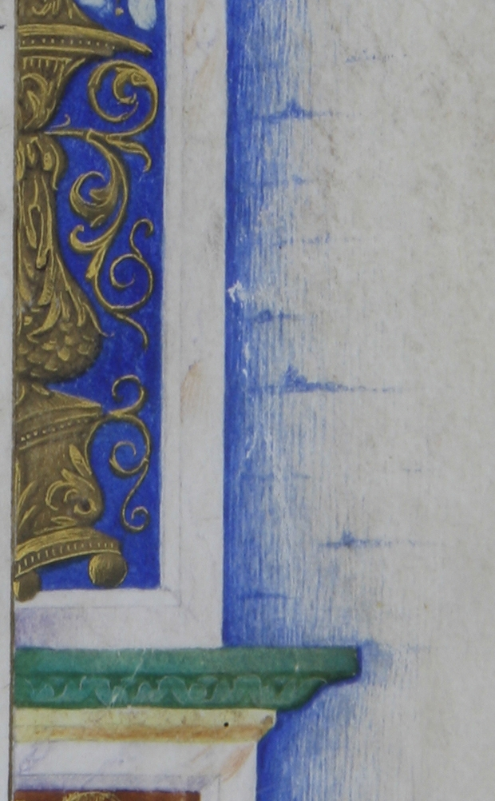
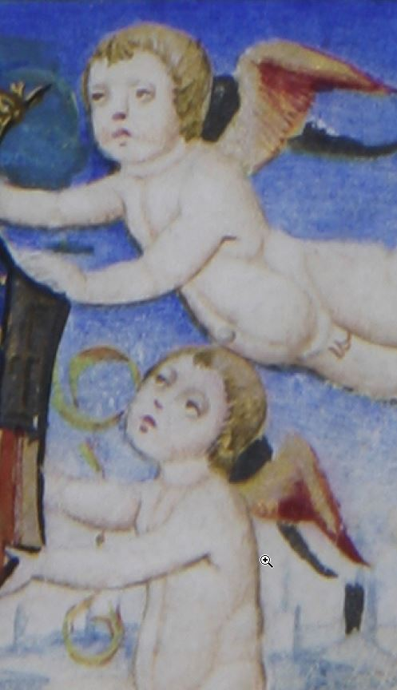
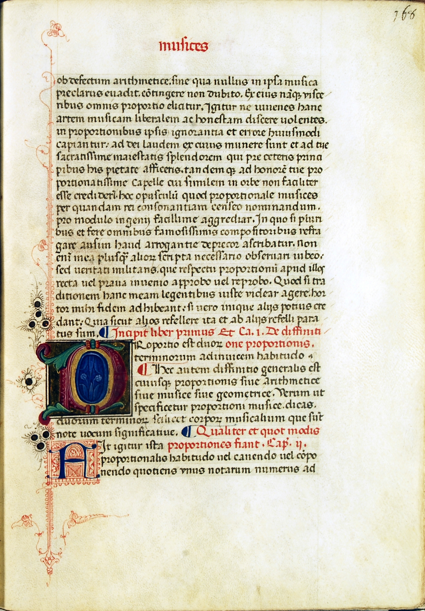
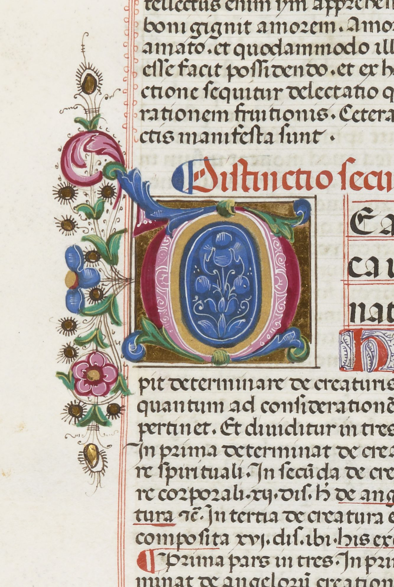
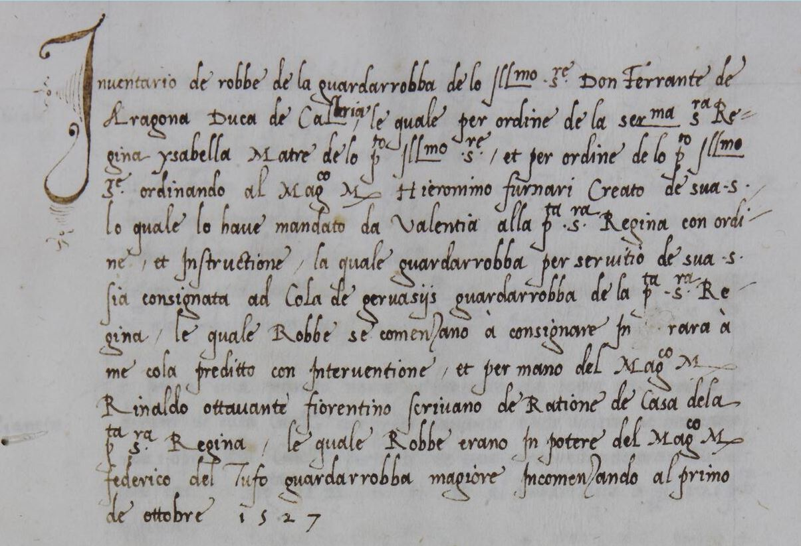

			<div class="content">
				<div class="contentbox article">
<h2>The Production and History of Valencia 835</h2><p class="author">Christian Goursaud (Royal Birmingham Conservatoire, Birmingham City University)</p>
<p><span class="para-no" id="para-1">[1]</span>The splendidly produced manuscript <span class="siglum">E-VAu 835</span> (hereafter <strong>V</strong>) was made at the Aragonese court of Naples during the music theorist Johannes Tinctoris’s period of employment there under King Ferrante I from the 1470s to the 1490s, and is now held in the Biblioteca Històrica of the Universitat de València.<a href="notes.html#footnote-1" id="footnote-ref-1">1</a> Containing nine of Tinctoris’s music-theoretical treatises, it is bound in morocco leather with gold tooling, and features gold illumination and finely painted floral decoration.<a href="notes.html#footnote-2" id="footnote-ref-2">2</a> It opens on fol. 2<sup>r</sup> with a lavish frontispiece that frames not only the beginning of the first treatise, <em>Expositio manus</em>, but also a beautifully executed portrait miniature, presumed to be of Tinctoris himself (<a data-toggle="collapse" class="figureReference" data-target="#Figure81" href="#Figure81">Figure 8.1.</a><span id="Figure81" class="figure collapse"><span class="figure-caption"><span class="figno">Figure 8.1.</span> Universitat de València, Biblioteca Històrica, MS 835, fol. 2<sup>r</sup>: frontispiece (detail). Source: Universitat de València, Biblioteca Històrica.</span></span>) This chapter presents recent research into the circumstances surrounding and reasons behind <strong>V</strong>’s production, and then traces the manuscript’s journey from late fifteenth-century Naples to present-day Valencia.</p><h3>Dating the Manuscript: The Escutcheon</h3><p><span class="para-no" id="para-2">[2]</span>Most research concerning the production of <strong>V</strong> has been focused on the manuscript’s frontispiece (fol. 2<sup>r</sup>, <a data-toggle="collapse" class="figureReference" data-target="#Figure82" href="#Figure82">Figure 8.2.</a><span id="Figure82" class="figure collapse"><span class="figure-caption"><span class="figno">Figure 8.2.</span> Universitat de València, Biblioteca Històrica, MS 835 [<em>olim</em> 844], fol. 2<sup>r</sup>: frontispiece. Source: Universitat de València, Biblioteca Històrica. </span></span>) and, although the importance of the portrait miniature has been noted many times, most of this scholarly activity has been concerned with the armorial escutcheon that appears in the lower half of the design (<a data-toggle="collapse" class="figureReference" data-target="#Figure83" href="#Figure83">Figure 8.3.</a><span id="Figure83" class="figure collapse"><span class="figure-caption"><span class="figno">Figure 8.3.</span> Universitat de València, Biblioteca Històrica, MS 835 [<em>olim</em> 844], fol. 2<sup>r</sup>: frontispiece (detail). Source: Universitat de València, Biblioteca Històrica.</span></span>). The importance of the escutcheon to the history of the manuscript has recently been brought into the foreground by Ronald Woodley, publishing evidence in 2013 that <strong>V</strong> must have been completed ‘between the last few months of 1477 and the first few of 1478’, thereby establishing it as the ‘earliest datable source for the main corpus of Tinctoris’s pedagogical treatises’.<a href="notes.html#footnote-3" id="footnote-ref-3">3</a> The establishment of the earliest source in a textual tradition is unarguably a matter of significance, especially when the texts in question are among the most valuable witnesses to late fifteenth-century music theory. Attention will therefore be paid to the escutcheon in the earlier stages of the present article, before the discussion is broadened to include the portrait miniature and other aspects of <strong>V</strong>’s production and later history. </p>
<p><span class="para-no" id="para-3">[3]</span>Before addressing Woodley’s 2013 findings, it will be profitable briefly to survey the previous commentary on the escutcheon in question. The librarian and bibliographer Marcelino Gutiérrez del Caño (1861–1922) noted in his 1913 catalogue of manuscripts in Valencia’s university library that the <strong>V</strong> escutcheon is that of the sovereigns of Naples, supported by four angels (<em>ángeles</em>) or <em>putti</em>.<a href="notes.html#footnote-4" id="footnote-ref-4">4</a> The Neapolitan bibliographer Tammaro De Marinis, in his magisterial mid-twentieth-century study of the library of the Aragonese kings of Naples, categorized the escutcheon as number 15 (<a data-toggle="collapse" class="figureReference" data-target="#Figure84" href="#Figure84">Figure 8.4.</a><span id="Figure84" class="figure collapse"><span class="figure-caption"><span class="figno">Figure 8.4.</span> De Marinis’s Aragonese escutcheon Type 15. Source: Tammaro De Marinis, <em>La biblioteca napoletana dei re d’Aragona</em>, 4 vols. (Milan: Hoepli, 1947–52); 2 suppl. vols., with Denise Bloch, Charles Astruc, Jacques Monfrin, and José Ruysschaert (Verona: Valdonega, 1969), ii. 164, plate B. </span></span>) in his typology of variants of Aragonese arms. De Marinis observed nineteen types of Aragonese coats of arms in codices of the period 1442–1500, of which Types 10–15 are arms of King Ferrante I, for whom he concluded <strong>V</strong> must have been prepared.<a href="notes.html#footnote-5" id="footnote-ref-5">5</a> In 1997, the Dresden-based manuscript librarian Thomas Haffner published a study of the library of King Ferrante’s son, Giovanni of Aragon (1456–85), that includes a catalogue-type entry on <strong>V</strong>.<a href="notes.html#footnote-6" id="footnote-ref-6">6</a> He described the arms as a <em>Roßstirnschild</em>, or horse-head shield,<a href="notes.html#footnote-7" id="footnote-ref-7">7</a> with three red pales in fields 1 and 4, surmounted by a brown-golden lily-crown. Haffner noticed that the area of blue around the crown shows signs of overpainting, adding that the arms of the upper <em>putti</em> seem somewhat distorted, as though they originally supported something other than the Aragonese arms, and proposed that the escutcheon originally was surmounted by a red cardinal’s hat, suggesting a dedication to Giovanni. Haffner nevertheless acknowledged that, even using special lighting, no outline of a hat may be seen today.</p>
<p><span class="para-no" id="para-4">[4]</span>Haffner’s discovery enabled Woodley to make the observation, first in 2005, that if <strong>V</strong> were made for Giovanni while he was a cardinal, then the manuscript must have been produced between his election as such in December 1477 and his death in October 1485.<a href="notes.html#footnote-8" id="footnote-ref-8">8</a> Later, in 2013, Woodley proposed a significant revision to Haffner’s theory, observing that if there truly had been a cardinal’s red hat on the frontispiece before the overpainting, then one would expect there to have been ‘the incorporation of the red <em>fiocchi</em> or series of knotted tassels that conventionally hang down from either side of the hat’. Before Giovanni was created cardinal in December 1477, he held the position of prothonotary apostolic, therefore if <strong>V</strong> had been produced for him during this period, it could have been a grey prothonotary’s hat that was overpainted, as will be explored below. This led to the suggestion that <strong>V</strong> was completed in ‘a period between the last few months of 1477 and the first few of 1478’.<a href="notes.html#footnote-9" id="footnote-ref-9">9</a> Woodley writes that ‘the case presented in [his] essay can hardly be regarded yet as definitive’, and accordingly it is intended here to explore further some of the relevant evidence. </p>
<p><span class="para-no" id="para-5">[5]</span>The task of establishing a <em>terminus post quem</em> for <strong>V</strong> is relatively simple, since the manuscript includes the complete text of Tinctoris’s <em>De arte contrapuncti </em>on fols. 77<sup>v</sup>–144<sup>r</sup>. This treatise is dated on fol. 101<sup>r</sup> of <span class="siglum">B-Br II 4147</span> to 11 October 1477.<a href="notes.html#footnote-10" id="footnote-ref-10">10</a> As Woodley observes, we may therefore be confident that <strong>V</strong> must have been completed after this date. That is not to say that production of the manuscript did not start before then, since many of the other texts had been completed during the previous few years. Indeed, as shall be seen, it is possible that the manuscript was completed very soon after this date.</p>
<p><span class="para-no" id="para-6">[6]</span>To establish a <em>terminus ante quem</em> is considerably more difficult, and currently hinges on Woodley’s plausible argument that we ought, according to convention, to expect red <em>fiocchi </em>t0<em> </em>hang down from either side of the hat if the manuscript were prepared for Giovanni during his cardinalate. The manner in which these tassels might have been incorporated into the design is exemplified in Woodley’s article using <span class="siglum">E-VAu 390</span>, which indeed features a cardinal’s red hat on the frontispiece, accompanied by the expected red <em>fiocchi</em> falling behind the escutcheon (<a data-toggle="collapse" class="figureReference" data-target="#Figure85" href="#Figure85">Figure 8.5.</a><span id="Figure85" class="figure collapse"><span class="figure-caption"><span class="figno">Figure 8.5.</span> <span class="figcaption"> Valencia, Universitat de València, Biblioteca Histórica, MS 390 [<em>olim</em> 838], fol. 7<sup>r</sup>, frontispiece (detail). Source: </span><a target="_blank" rel="noreferrer" href="http://roderic.uv.es/uv_ms_0390">http://roderic.uv.es/uv_ms_0390</a>.</span></span>). Woodley also cites the example of <span class="siglum">F-R A 13</span>, a 1485 copy dedicated to Giovanni of Leonardo Nogarola’s <em>Tractatus de mundi eternitate</em> whose frontispiece (fol. 3<sup>r</sup>) also features the red cardinal’s hat (<a data-toggle="collapse" class="figureReference" data-target="#Figure86" href="#Figure86">Figure 8.6.</a><span id="Figure86" class="figure collapse"><span class="figure-caption"><span class="figno">Figure 8.6.</span>  Rouen, Bibliothèque municipale, MS A 13, Leonardo Nogarola’s <em>Tractatus de mundi eternitate</em>, fol. 3<sup>r</sup> (detail). Source: <a target="_blank" rel="noreferrer" href="http://gallica.bnf.fr/ark:/12148/btv1b84540139">http://gallica.bnf.fr/ark:/12148/btv1b84540139</a>.</span></span>). </p>
<p><span class="para-no" id="para-7">[7]</span>The overpainting above the escutcheon on the frontispiece of <strong>V</strong>, notes Woodley, ‘is restricted to the immediate area of the crown, perhaps with a little re-contouring or touching-up of the <em>putti</em>’s rearmost arms’. He reports that there are no signs of ‘interference or repainting’ in the decorative gold ribbons that hang to either side of the escutcheon, falling behind the <em>putti</em>, apart from a small, possibly accidental ‘patch’ of repainting ‘between the arms of the upper right <em>putto</em>’.<a href="notes.html#footnote-11" id="footnote-ref-11">11</a> Woodley also points out that there is slight coloration of the verso of the repainted area behind the crown, which ‘is of a greyish hue, similar to that corresponding to the predominantly grey and blue tones of the second and third quarters of the arms’. This is in contrast, he says, to the ‘leaching of the red pigment from the ground of the red and gold Aragonese <em>pali</em>, and from the <em>putti</em>’s wings’.<a href="notes.html#footnote-12" id="footnote-ref-12">12</a> This grey hue leads Woodley to propose that the artist painted over a grey prothonotary’s hat, which would have been Giovanni’s heraldic emblem between becoming apostolic prothonotary on 12 July 1465, at the age of nine, and becoming cardinal in December 1477. Given as examples of the use of the prothonotary’s hat are the frontispieces of <em>E-VAu</em> 847 (fol. 2<sup>r</sup>, <a data-toggle="collapse" class="figureReference" data-target="#Figure87" href="#Figure87">Figure 8.7.</a><span id="Figure87" class="figure collapse"><span class="figure-caption"><span class="figno">Figure 8.7.</span> Valencia, Universitat de València, Biblioteca Histórica, MS 847 [<em>olim</em> 770], Thomas Aquinas: <em>De ente et essentia</em>, <em>c</em>.1472, fol. 2<sup>r</sup> (detail). Source: <a target="_blank" rel="noreferrer" href="http://roderic.uv.es/uv_ms_0847">http://roderic.uv.es/uv_ms_0847</a>.</span></span>), a <em>c</em>.1472 copy of Thomas Aquinas’s <em>De ente et essentia</em>, and <span class="siglum">F-Pn lat. 6292</span> (fol. 1<sup>r</sup>, <a data-toggle="collapse" class="figureReference" data-target="#Figure88" href="#Figure88">Figure 8.8.</a><span id="Figure88" class="figure collapse"><span class="figure-caption"><span class="figno">Figure 8.8.</span> Paris, Bibliothèque nationale de France, MS lat. 6292, fol. 1<sup>r</sup> (detail). Source: <a target="_blank" rel="noreferrer" href="http://gallica.bnf.fr/ark:/12148/btv1b8447068x">http://gallica.bnf.fr/ark:/12148/btv1b8447068x</a>.</span></span>), a <em>c</em>.1473 copy of Porphyry’s <em>Isagoge ad cathegorias Aristotelis</em>.<a href="notes.html#footnote-13" id="footnote-ref-13">13</a></p>
<p><span class="para-no" id="para-8">[8]</span>Woodley states that ‘returning once again to the show-through on fol. 2 verso of <strong>V</strong>, it is not impossible to discern a slight contour in the staining of the overpainted area above the escutcheon that might well indicate the ghost of the shape of … a prothonotary’s hat, and the colouring of the stain is certainly at least consistent with the notion that this could indeed have been the underlying depiction.’ I had the opportunity to visit the manuscript in Valencia in 2014, and on physical inspection of fol. 2<sup>v</sup>, the contour Woodley describes is indeed visible. Using only ambient transmitted and reflected light, gently manipulating the parchment while looking at the verso from certain angles, it is indeed possible to see much more distinctly the shape of the prothonotary’s hat to which Woodley refers.<a href="notes.html#footnote-14" id="footnote-ref-14">14</a></p>
<p><span class="para-no" id="para-9">[9]</span>It seems that none or very little of the original paint remains beneath the surface of the newer layer, since torchlight transmitted from the verso and viewed from the recto, or vice versa, reveals the same shape of the prothonotary’s hat, owing to the overpainter having scratched away the surface of the parchment. If there were a residual layer of paint beneath the surface of the overpainting then it would be expected to interfere with the transmission of light. The faint yet seemingly dark shape of the hat noticed by Woodley on the verso is most likely a discoloration caused by the particular pigment used to paint the hat, which has permeated the parchment and hence avoided being scratched away.<a href="notes.html#footnote-15" id="footnote-ref-15">15</a> It is just possible to see dark lines where the golden bands originally were attached to the prothonotary’s hat, which indicates they were simply overpainted rather than scratched away first. </p>
<p><span class="para-no" id="para-10">[10]</span>Discoloured patches on the obverse of quarters 2 and 3 of the escutcheon suggest that the hat was painted with the same or a similar pigment. On first-hand visual inspection using torchlight and 10 × magnification, the fields of the leftmost and rightmost sectors of quarters 2 and 3, which appear in <a data-toggle="collapse" class="figureReference" data-target="#Figure83" href="#Figure83">Figure 8.3.</a><span id="Figure83" class="figure collapse"><span class="figure-caption"><span class="figno">Figure 8.3.</span> Universitat de València, Biblioteca Històrica, MS 835 [<em>olim</em> 844], fol. 2<sup>r</sup>: frontispiece (detail). Source: Universitat de València, Biblioteca Històrica.</span></span> to be grey, are revealed to have been made with a dark silver metallic paint. Likewise, the light silver pales and the gold fleurs-de-lys, not to mention the gold crown, shine brightly under illumination and magnification. Physical inspection, therefore, would seem to corroborate Woodley’s findings, on the basis of which it would seem likely that Giovanni was indeed the commissioner and/or dedicatee of<strong> V</strong>, and that the manuscript was finished between the completion of <em>De arte contrapuncti </em>on 11 October 1477 and sometime shortly after Giovanni became cardinal, perhaps in the first few months of 1478. </p>
<p><span class="para-no" id="para-11">[11]</span>It has been possible to examine at first-hand another manuscript from Giovanni’s collection which features an escutcheon bearing the Aragonese arms – <span class="siglum">GB-Lbl Harley 3485</span>, a 1470 Florentine manuscript copy of Plutarch’s <em>Lives</em>.<a href="notes.html#footnote-16" id="footnote-ref-16">16</a> The manuscript is identifiable as having been prepared for Giovanni on account of the inscription ‘card<em>en</em>ale’ on the front flyleaf.<a href="notes.html#footnote-17" id="footnote-ref-17">17</a> The escutcheon is surmounted by a five-point lily crown, just as in <strong>V</strong>, though in <span class="siglum">GB-Lbl Harley 3485</span> the crown is somewhat ill-defined; the execution bears none of the subtlety of the rest of the decoration. It is enclosed in a dark blue circle, the pigment of which is less vibrant than that of the surrounding Florentine hybrid <em>bianchi girari</em> decoration, which is attributable to Mariano del Buono (c.1433–1504).<a href="notes.html#footnote-18" id="footnote-ref-18">18</a> There is a gold band around the blue circle within a laurel wreath that is supported by four <em>putti</em>. It would appear that, just as Haffner and Woodley suggest in the case of <strong>V</strong>, the same dark shape of the prothonotary’s hat as in <strong>V</strong> is very definitely visible on the verso of the frontispiece of <span class="siglum">GB-Lbl Harley 3485</span> (fol. 3), using transmitted light, and there is bleed-through onto the verso of the pigment used for the hat that is visible even without transmitted light.<a href="notes.html#footnote-19" id="footnote-ref-19">19</a> The bleed-through is of the same shade and intensity as that created by the painting of quarters 1 and 4 of the Aragonese arms, which is rendered in a half-rounded escutcheon. In the miniature to the right of the escutcheon, which depicts Eumenes of Cardia, dressed in green, being strangled by one of his guards, dressed in red, the bars of the prison are executed in the same pigment as the prothonotary’s hat. This is shown by a perfect match between the shade and intensity of the bleed-though. Using torchlight transmitted from the verso to the recto, it is possible to observe a greater degree of increase in opacity in the undisturbed black pigment of the prison bars than in the partially erased and overpainted prothonotary’s hat.</p>
<p><span class="para-no" id="para-12">[12]</span>The manuscript <span class="siglum">GB-Lbl Harley 3485</span><em> </em>may therefore be added to the two examples given by Woodley of manuscripts commissioned for Giovanni that (still) feature a grey prothonotary’s hat, <span class="siglum">E-VAu 847</span> and<em> </em><span class="siglum">F-Pn lat. 6292</span>, along with the following eleven manuscripts and incunabula:</p>
<p>1.) <span class="siglum">F-Pn lat. 7549</span> (fol. 1<sup>r</sup>, <a data-toggle="collapse" class="figureReference" data-target="#Figure89" href="#Figure89">Figure 8.9.</a><span id="Figure89" class="figure collapse"><span class="figure-caption"><span class="figno">Figure 8.9.</span> Paris, Bibliothèque nationale de France, MS lat. 7549, fol. 1<sup>r</sup> (detail). Source: Bibliothèque nationale de France.</span></span>), a <em>c</em>.1470 copy of Priscian translated by George of Trebizond.<a href="notes.html#footnote-20" id="footnote-ref-20">20</a></p>
<p>2.) <span class="siglum">F-Pn lat. 8374</span>, a manuscript copy (<em>c</em>.1472<span class="fntc">–</span>8) of the epic poem <em>Tarentina</em> by Paracletus Malvezzi (1408<span class="fntc">–</span>87).<a href="notes.html#footnote-21" id="footnote-ref-21">21</a> </p>
<p>3.) <span class="siglum">A-Wn 32</span>, an undated (<em>c</em>.1472?) manuscript copy of Servius’s commentaries on Virgil’s <em>Aeneis</em>, <em>Bucolica</em>, and <em>Georgica</em>.<a href="notes.html#footnote-22" id="footnote-ref-22">22</a></p>
<p>4.) <span class="siglum">F-Pn lat. 6292</span>, an undated (<em>c</em>.1473?) copy of various works by Porphyry, Boethius, Aristotle, and Gilbertus Porretanus.<a href="notes.html#footnote-23" id="footnote-ref-23">23</a></p>
<p>5.) <span class="siglum">F-Pn Rés. Z. 120</span>, a 1470 printed copy of Cicero, <em>Epistulae ad Brutum</em>,<em> ad Quintum fratrem, ad Octavianum, ad Atticum</em>, edited by Johannes Andreas, Bishop of Aleria.<a href="notes.html#footnote-24" id="footnote-ref-24">24</a> Printed in Rome by Conrad Sweynheym and Arnold Pannartz.</p>
<p>6.) <span class="siglum">F-Pn Rés. E*. 15</span> (fol. 2<sup>r</sup>, &lt;**<span class="figno">Figure 8.10.</span><span class="figfile">[8-10.jpg]</span>Paris, Bibliothèque nationale de France, Rés. E*. 15, fol. 1<sup>r</sup> (detail). Source: Bibliothèque nationale de France.**&gt;), a copy of Cicero, <em>Opera philosophica</em> printed in Rome by Conrad Sweynheym and Arnold Pannartz, dated 26 April 1471.<a href="notes.html#footnote-25" id="footnote-ref-25">25</a> </p>
<p>7.) <span class="siglum">F-Pn Rés. G. YC. 212</span>, a copy of Aelius Donatus, <em>Commentarius in Terentii Comoedias</em>, printed in Rome by Conrad Sweynheym and Arnold Pannartz, dated 10 December 1472.<a href="notes.html#footnote-26" id="footnote-ref-26">26</a></p>
<p>8.) <span class="siglum">F-Pn Rés. D. 1842</span>, a copy of Johannes de Janduno (Duns Scotus), <em>Quaestiones super libros de Anima Aristotelis</em>, printed at Venice in 1473 by Franciscus de Hailbrun (Franz Renner) and Nicolaus de Frankfordia.<a href="notes.html#footnote-27" id="footnote-ref-27">27</a></p>
<p>9.) <span class="siglum">F-Pn Rés. G. YC. 373</span><span class="fntc">–</span><span class="fntc">4</span><span class="siglum">, a copy of Ovid, Metamorphoses, Heroides, and Ars amatoria, printed in Venice in 1474 by Jacobus Rubens.</span><a href="notes.html#footnote-28" id="footnote-ref-28">28</a></p>
<p>10.) <span class="siglum">F-Pn lat. 6922, an undated manuscript copy of logical works in Latin by Aristotle.</span><a href="notes.html#footnote-29" id="footnote-ref-29">29</a></p>
<p>11.) <span class="siglum">F-Pn Rés. H. 35, a copy of Eusebius, Historia ecclesiastica, printed at Rome and dated 15 May 1476.</span><a href="notes.html#footnote-30" id="footnote-ref-30">30</a></p>
<p><span class="para-no" id="para-13">[13]</span>There are therefore fourteen extant examples of manuscripts and incunabula that can be identified as having belonged to Giovanni and which bear a grey prothonotary’s hat that has not been subjected to subsequent heraldic alteration.<a href="notes.html#footnote-31" id="footnote-ref-31">31</a> Each of them appears surmounting a half-round escutcheon, unlike <strong>V</strong><em>, </em>whose escutcheon is of the horse-head type. If <strong>V</strong> was indeed prepared for Giovanni before December 1477, with a grey prothonotary’s hat, then for what reason does the shape of the escutcheon differ so clearly from every other extant example? Indeed, which manuscripts were prepared with a horse-head escutcheon, like <strong>V</strong>?</p>
<p><span class="para-no" id="para-14">[14]</span>The earliest occurrence of a horse-head escutcheon in dated books associated with Giovanni is on the painted frontispiece to the incunabulum <span class="siglum">F-Pm inc. 361(1)</span>, a 1483 Venetian impression, by Octavianus Scotus, of the first book of the Dominican Johannes Capreolus (<em>c</em>.1380–1444), <em>Defensiones theologiae Thomae Aquinatis in quattuor libros Sententiarum</em>. Haffner suggests that the decoration may have been carried out by Gioacchino di Giovanni de Gigantibus.<a href="notes.html#footnote-32" id="footnote-ref-32">32</a> Within Giovanni’s library, there are four securely datable examples that were made during the following year, 1484:</p>
<p>1.) <span class="siglum">E-VAu 395</span> (fol. 10<sup>r</sup>, <a data-toggle="collapse" class="figureReference" data-target="#Figure811" href="#Figure811">Figure 8.11.</a><span id="Figure811" class="figure collapse"><span class="figure-caption"><span class="figno">Figure 8.11.</span> Valencia, Universitat de València, Biblioteca Histórica, MS 395 [<em>olim</em> 794], fol. 10<sup>r</sup> (detail). Source: <a target="_blank" rel="noreferrer" href="http://roderic.uv.es/uv_ms_0395">http://roderic.uv.es/uv_ms_0395</a>.</span></span>): Aquinas, <em>Summa theologica, prima pars secundae partis</em>, copied in gothic rotunda script in Naples by Venceslaus Crispus and completed on 17 February 1484, as part of the major Aquinas series.<a href="notes.html#footnote-33" id="footnote-ref-33">33</a></p>
<p>2.) <span class="siglum">E-VAu 51</span> (fol. 1<sup>r</sup>, &lt;**<span class="figno">Figure 8.12.[8-12.jpg]</span>Valencia, Universitat de València, Biblioteca Histórica, MS 51 [<em>olim</em> 818], fol. 1<sup>r</sup> (detail). Source: <a target="_blank" rel="noreferrer" href="http://roderic.uv.es/uv_ms_0051">http://roderic.uv.es/uv_ms_0051</a>.**&gt;): Seneca, <em>Tragoediae</em>, copied in humanistic script in Florence by Antonio Sinibaldi and completed on 5 June 1484, before being decorated in Naples by Cristoforo Majorana or in the Rapicano workshop.<a href="notes.html#footnote-34" id="footnote-ref-34">34</a></p>
<p>3.) <span class="siglum">GB-Cu Gg. 3. 22</span>: Bonaventure, <em>Super quarto libro Sententiarum</em>, copied in gothic rotunda script in Florence and decorated in Naples, possibly by Matteo Felice.<a href="notes.html#footnote-35" id="footnote-ref-35">35</a></p>
<p>4.) <span class="siglum">E-E t.ii.5</span>: Horace, <em>Odarum libri V</em>, <em>Carmen saeculare</em>, <em>Ars poetica</em>, <em>Epistolarum libri II</em> and <em>Sermonum libri II</em>, copied in humanistic script in Florence by Antonio Sinibaldi and decorated in Naples, possibly by Cristoforo Majorana.<a href="notes.html#footnote-36" id="footnote-ref-36">36</a></p>
<p><span class="para-no" id="para-15">[15]</span>Two further examples may tentatively be dated to the same year: </p>
<p>5.) <em>E-VAu</em> 390 (fol. 7<sup>r</sup>, see Figure 8.5 above): Albertus Magnus,<em> Summa theologiae sive De mirabili scientia Dei. Liber I</em>, copied in gothic rotunda script and decorated in Naples, possibly by Nardo Rapicano.<a href="notes.html#footnote-37" id="footnote-ref-37">37</a></p>
<p>6.) <em>GB-Cu</em> Gg. 3. 23. Bonaventure, <em>Super secundo libro Sententiarum</em>, copied in gothic rotunda in Florence.<a href="notes.html#footnote-38" id="footnote-ref-38">38</a></p>
<p><span class="para-no" id="para-16">[16]</span>The final extant example of a manuscript directly associated with Giovanni that features the horse-head escutcheon is <span class="siglum">A-Wn 49</span>, a copy, made in Naples in humanistic script by Gianrinaldo Mennio, of Tacitus, <em>Annales XI–XVI</em>, <em>Historia I–V</em>, <em>Germania</em>, and <em>Dialogus de oratoribus</em>. The codex may be dated to the period 1480–85.<a href="notes.html#footnote-39" id="footnote-ref-39">39</a> No dated manuscripts of Giovanni’s, therefore, feature the horse-head escutcheon before the 1483 example, <span class="siglum">F-Pm inc. 361(1)</span>, and most dated and datable manuscripts that do were made in 1484. Could this suggest a slightly later dating for <strong>V</strong>?</p>
<p><span class="para-no" id="para-17">[17]</span>The horse-head escutcheon is found in fourteen codices decorated for King Ferrante dating from <em>c</em>.1467 (<em>E-VAu</em> 890, a Dominican breviary) to <em>c</em>.1491 (<em>E-VAu</em> 380, part of the Aquinas series), and one decorated for Alfonso, Duke of Calabria, a copy of Macrobius dated 1472, as may be observed in <a target="_blank" rel="noreferrer" href="file:///C:\Users\ID123124\Dropbox\Birmingham%20Conservatoire\Brepols%20volume\Web%20Version\Web-Ready%20Chapters\Goursaud\table8-1.html" target="_blank">Table 8.1</a>.<a href="notes.html#footnote-40" id="footnote-ref-40">40</a> It is just possible to discern a lack of incidences of the use of the horse-head escutcheon by decorators for Ferrante in the period during the 1480s (1483<span class="siglum">–88)</span> when it is being used by Cardinal Giovanni’s artists around the middle of the decade. It is difficult to be certain of this, however, due to the imprecision of the dating of the majority of the books. </p><h3>Dating the Manuscript: The Golden Bands</h3><p><span class="para-no" id="para-18">[18]</span>Another heraldic conundrum concerns the surviving golden bands that fall from whatever heraldic symbol originally surmounted the escutcheon in <strong>V</strong> and behind the <em>putti</em>. These bands must have been heraldically appropriate to the original symbol, yet they do not appear to be appropriate to the prothonotary’s hat. There are eighteen extant manuscripts and incunabula from Giovanni’s library that still feature, or can be said confidently to have once featured, a prothonotary’s hat. Of these, eight books: <span class="siglum">F-Pn Rés. Z. 120</span>, <span class="siglum">F-Pn Rés. G. YC. 212</span>, <span class="siglum">E-VAu 847</span>, <span class="siglum">A-Wn 32</span>, <span class="siglum">F-Pn Rés. D. 1842</span>, <span class="siglum">A-Wn 34</span>, <span class="siglum">I-AGI 1</span>, and <span class="siglum">F-Pn Rés. H. 35</span>) feature neither golden bands nor <em>fiocchi</em>, while five books (<span class="siglum">F-Pn Rés. E*. 15</span>, <span class="siglum">F-Pn lat. 7549</span>,<a href="notes.html#footnote-41" id="footnote-ref-41">41</a> <em>F-Pn</em> lat. 8374 (fol. 1r, <a data-toggle="collapse" class="figureReference" data-target="#Figure814" href="#Figure814">Figure 8.14</a><span id="Figure814" class="figure collapse"><span class="figure-caption"><span class="figno">Figure 8.14</span> Paris, Bibliothèque nationale de France, MS lat. 8374, fol. 1<sup>r</sup> (detail). Source: <a target="_blank" rel="noreferrer" href="http://gallica.bnf.fr/ark:/12148/btv1b84901835">http://gallica.bnf.fr/ark:/12148/btv1b84901835</a>.</span></span>), <span class="figcaption"><em>F-Pn</em> lat. 6292</span>, and <span class="figcaption"><em>F-Pn</em> Rés. G. YC. 373</span><a href="notes.html#footnote-42" id="footnote-ref-42">42</a> feature grey <em>fiocchi</em> in a similar style to those found in association with cardinal’s hats, and no golden bands. It has not been possible to obtain images of or to inspect first-hand <span class="figcaption"><em>E-Vasmr</em> s.n.</span>, <span class="siglum">F-Pn lat. 6922</span>, <span class="siglum">F-Pn lat. 7524</span>, and <span class="siglum">I-AGI 2</span>. In short, there is seemingly no evidence for the combination of gold bands with the prothonotary’s hat that can corroborate the heraldic appropriateness of their collocation on the frontispiece of <strong>V</strong>.</p>
<p><span class="para-no" id="para-19">[19]</span>There are four extant manuscripts from Giovanni’s library that feature a cardinal’s hat that has not been overpainted: <span class="siglum">GB-Gu Hunterian. By.2.3</span>, <span class="siglum">E-VAu 390</span>, <span class="siglum">F-R A 13</span>, and <em>E-VAu</em> 759 (fol. 2r, <a data-toggle="collapse" class="figureReference" data-target="#Figure815" href="#Figure815">Figure 8.15</a><span id="Figure815" class="figure collapse"><span class="figure-caption"><span class="figno">Figure 8.15</span> Valencia, Universitat de València, Biblioteca Histórica, MS 759 [<em>olim</em> 775]. Source: <a target="_blank" rel="noreferrer" href="http://weblioteca.uv.es/cgi/view.pl?source=uv_ms_0759">http://weblioteca.uv.es/cgi/view.pl?source=uv_ms_0759</a>.</span></span>) These all feature the expected ecclesiastical <em>fiocchi</em>, and no gold bands. It has not been possible, within the confines of the present research, to inspect the surviving cardinal’s hats on the frontispieces of the incunabula <span class="siglum">F-Pn Rés. D. 27 (1–4)</span>, <span class="siglum">F-Pn Rés. R. 91</span>, <span class="siglum">F-Pn Rés. H. 63</span>, <span class="siglum">F-Pn Rés. Z. 185</span>, <span class="siglum">F-Pm inc. 3619</span>, but Haffner’s descriptions do not relate the presence of golden bands. It would seem, therefore, there are no known examples of either a prothonotary’s or a cardinal’s hat being associated with hanging golden bands such as are seen on the frontispiece of <strong>V</strong>. This could be interpreted as an indication that some other heraldic device was originally painted there. </p><h3><a id="_Toc434897580"></a>Dating the Manuscript: Other Potential Recipients</h3><p><span class="para-no" id="para-20">[20]</span>After providing examples of those manuscripts that clearly show the red cardinal’s hat having been overpainted and erased, Woodley considers the possibility that other heraldic devices might have been placed above the escutcheon in <strong>V</strong>. He discounts Ferrante’s daughter, Beatrice, and focuses instead on his son Alfonso (1448–95), Duke of Calabria, later King Alfonso II after Ferrante I’s death in 1494, some of whose manuscripts feature the ducal coronet as a heraldic device. Since Alfonso was ‘a particularly energetic and generous cultural patron, with credentials for, and apparently genuine personal interests in, the support of the Neapolitan court’s literary, artistic and architectural ambitions’,<a href="notes.html#footnote-43" id="footnote-ref-43">43</a> Woodley sees him as a perfectly viable, indeed attractive, candidate as commissioner of <strong>V</strong>, especially given the two <em>elogia</em> by Frater Fortunatus Ferrariensis, a monk of the Olivetan order, which appear on fols. 1<sup>v</sup> and 164<sup>r</sup> of the manuscript. Indeed, Alfonso could convincingly be linked with the Olivetan order through his association with the church of S. Maria de Monteoliveto (now S. Anna dei Lombardi).<a href="notes.html#footnote-44" id="footnote-ref-44">44</a> Woodley asserts, however, that his analysis of manuscripts associated with Alfonso, which are reproduced in De Marinis’s and Toscano’s publications, shows that ‘the coronet was depicted only in association with the personal arms of the Duke of Calabria, quartered into Aragonese pali (2 and 3, or 1 and 4) and large cross of Jerusalem on a grey ground (1 and 4, or 2 and 3 respectively)’, and therefore that Alfonso probably was not the commissioner of<strong> V</strong>.<a href="notes.html#footnote-45" id="footnote-ref-45">45</a> He states that ‘if future research … can demonstrate that Alfonso’s arms, while he was Duke of Calabria, did sometimes combine the coronet with the full Aragonese escutcheon as seen in <strong>V</strong>, as an alternative to the escutcheon proper to the Dukedom, the question of attribution to him rather than Giovanni should certainly be reopened’.</p>
<p><span class="para-no" id="para-21">[21]</span>There are thirteen extant manuscripts that may be associated with Alfonso, none of which features the full Aragonese arms in combination with the coronet; these are detailed in <a target="_blank" rel="noreferrer" href="file:///C:\Users\ID123124\Dropbox\Birmingham%20Conservatoire\Brepols%20volume\Web%20Version\Web-Ready%20Chapters\Goursaud\table8-1.html" target="_blank">Table 8.1</a>. On this basis, it is tempting to conclude, like Woodley, that the only viable candidate for the commissioner of<strong> V</strong> is Giovanni. However, one possible scenario exists that could provide a narrative for an ascription of <strong>V</strong> to Alfonso. The pigments used for the escutcheon bearing the Aragonese arms, and the lily crown that surmounts it, look more vibrant than many areas of the rest of the frontispiece, and the execution is certainly more vivid and bold than the delicate rendering of the <em>putti</em>. This could be explained simply by the effect of the use of gold and the obvious difference in priority when the artist or artists were engaged in figurative as opposed to heraldic decoration. But given the fact that we may be almost certain that some overpainting of the surmounting occurred, it is not too fanciful at least to consider the possibility that the escutcheon was also overpainted, perhaps in preparation for, or after, Alfonso’s coronation as King of Naples on 8 May 1494. If the manuscript had been prepared in the few years following Tinctoris’s completion of <em>Liber de arte contrapuncti </em>on 11 October 1477 and then adjusted some 17 years later, this could easily account for the difference in vibrancy and vividness of the potentially refashioned areas. In this scenario, the arms of the Duke of Calabria on a horse-head escutcheon were painted initially, surmounted by a ducal coronet, as in <em>E-VAu</em> 55 (<a data-toggle="collapse" class="figureReference" data-target="#Figure816" href="#Figure816">Figure 8.16</a><span id="Figure816" class="figure collapse"><span class="figure-caption"><span class="figno">Figure 8.16</span> Valencia, Universitat de València, Biblioteca Histórica, MS 55 [<em>olim</em> 848], fol. 1<sup>r</sup> (detail). Source: <a target="_blank" rel="noreferrer" href="http://roderic.uv.es/uv_ms_0055">http://roderic.uv.es/uv_ms_0055</a>.</span></span>), before the later repainting. There are, however, several problems with this theory. In Alfonso’s collection of books, there do not seem to be any examples of similar adjustments, unlike in Giovanni’s rather larger collection. It is curious that no manuscripts of Alfonso’s survive from 1488 until his coronation in 1494; this could have been related to the political and economic disturbances of the late 1480s, which included the 1486 barons’ revolt. Until such a time as scientific methods of profiling individual pigments are available to be deployed on location in Valencia at a manageable cost, however, there is simply not enough evidence to prove the validity of this theory. At the current time the evidence still points to Giovanni as the codex’s probable commissioner.</p><h3>Dating the Manuscript: Scribal Speed</h3><p><span class="para-no" id="para-22">[22]</span>If <strong>V</strong> was indeed commissioned, planned, and had begun to be manufactured soon after or some time before the completion of Tinctoris’s treatise <em>De arte contrapuncti</em> in October 1477, ‘destined primarily for the collection of Giovanni d’Aragona while he was still prothonotary apostolic’,<a href="notes.html#footnote-46" id="footnote-ref-46">46</a> then it would be of relevance to consider how rapid the scribal process may have been. Despite the scholarly consensus that <strong>V</strong> was copied by Venceslaus Crispus, however, there are insufficient documentary records to allow direct analysis of the speed of his individual practice.<a href="notes.html#footnote-47" id="footnote-ref-47">47</a> Indeed, there is in general little surviving evidence from which timeframes for jobs of scribal work may be inferred.<a href="notes.html#footnote-48" id="footnote-ref-48">48</a> It is possible, however, and instructive, to consider some examples where some data concerning scribal speed may be gathered in relation to manuscripts produced for Giovanni of Aragon.</p>
<p><span class="para-no" id="para-23">[23]</span>We may learn much from one codex in particular – the Drouot Aquinas manuscript, one of two Neapolitan copies of the works of Thomas Aquinas – in this case <em>Catena aurea super Iohannem</em> – currently in private hands.<a href="notes.html#footnote-49" id="footnote-ref-49">49</a> This manuscript is written in gothic rotunda, of which script Crispus was by far the most prevalent practitioner at Naples. Indeed, the Drouot Aquinas manuscript forms part of a major collection of the works of Aquinas that was prepared for Giovanni, principally by Crispus himself. In this case, however, we are presented with the only extant manuscript to have been executed by the Flemish scribe Johannes de Guerne.<a href="notes.html#footnote-50" id="footnote-ref-50">50</a> The codex’s unusually long and informative colophon confirms that it was written in Naples and completed there on 18 November 1486 by De Guerne at the expense of Cardinal Giovanni. It also reveals that Giovanni had been sent by King Ferrante to Pope Innocent VIII in Rome, in order to appeal for assistance in the Aragonese war against the rebellious local barons:<a href="notes.html#footnote-51" id="footnote-ref-51">51</a></p><table><tr><td><p class="doubleColumnDisplayedText">Beati Thome Aquinatis continuum in duos evangelistas per me Johannem de Guerne Flamingum, exscriptum finitumque Neapoli regnante felicissimo rege Ferdinando, anno Domini natalis millesimo quatercentesimo octogesimo sexto, decimo octavo die novembris, sumptu illustrissimi Domini Joannis de Aragonia eiusdem Ferdinandi regis filii, sancte romanae ecclesie cardinalis presbiteri, qui dum Romam a patre ad pontificem maximum missus esset vitam cum morte finivit dicto millesimo anno LXXXV mense septembris.<a href="notes.html#footnote-52" id="footnote-ref-52">52</a></p></td><td><p class="doubleColumnDisplayedText">Blessed Thomas Aquinas, ‘Commentary on the Two Evangelists’, written and completed by me Johannes de Guerne, Fleming, at Naples, in the reign of the most felicitous King Ferrante, in the year of our Lord’s birth one thousand four hundred and eighty-six, om the eighteenth day of November, at the expense of the most illustrious Lord Giovanni of Aragon, son of the same King Ferrante, Cardinal priest of the Holy Roman Church, whose life ended with death while having been sent to Rome, to the Supreme Pontiff, by his father, in the said eighty-fifth milennial year, in the month of September. </p></td></tr></table><p><span class="para-no" id="para-24">[24]</span>Giovanni died not in September, as related by De Guerne, but on 17 October 1485, at the age of twenty-nine, when he said either to have fallen victim to the plague or to have been poisoned.<a href="notes.html#footnote-53" id="footnote-ref-53">53</a> He must therefore have commissioned the Drouot Aquinas manuscript in the months leading up to his death. Since he is understood to have left for Rome ‘at the beginning of October’, this would seem t0 provide a reasonable <em>terminus ante quem</em> for the commissioning of the Drouot Aquinas manuscript.<a href="notes.html#footnote-54" id="footnote-ref-54">54</a> The production of the manuscript must therefore have taken at least thirteen and a half months from initial commission by the beginning of October 1485 to completion of the text on 18 November 1486, followed by a period of decoration and then binding. On this basis, if <strong>V</strong> were completed between the last few months of 1477 and the first few of 1478 then it could be expected to have been commissioned between August 1476 and February 1477. However, De Guerne was nowhere near as prolific a scribe as Crispus, and it could be inferred that Crispus was given so much work precisely because he was able to work quickly. </p>
<p><span class="para-no" id="para-25">[25]</span>It is possible to learn that scribal speed was something of which to be proud from the case of Joanmarco Cinico, who worked in a fine humanistic script, was a pupil of the Florentine scribe Pietro Strozzi (b. 1416), and was a correspondent and evidently a friend of Tinctoris’s.<a href="notes.html#footnote-55" id="footnote-ref-55">55</a> Cinico was renowned for his speed of copying and came to describe himself as ‘Velox’, which first appears in <span class="siglum">E-VAu 781</span>, a 1468 copy of Pontano’s <em>De Principe</em>, wherein he describes himself as Joannes M. Velox Parmensis.<a href="notes.html#footnote-56" id="footnote-ref-56">56</a> In the colophon to his 1465 copy of Pliny’s <em>Historia naturalis</em> (<span class="siglum">I-Nn V.I.3</span>), Cinico relates that he completed the copying of its 635 folios in 120 days – a rate of five folios per day.<a href="notes.html#footnote-57" id="footnote-ref-57">57</a> He completed his copy of Facio’s <em>De humanae vitae felicitate dialogus</em> (<span class="siglum">I-Fl Strozz. 109</span>) in fifty-two hours, and the thirty-six or thirty‑eight folios of his copy of Albertus Magnus’s <em>Arte di ben morire</em> in fifty-three hours.<a href="notes.html#footnote-58" id="footnote-ref-58">58</a> These examples, however, clearly represent the upper limits of scribal rapidity.</p>
<p><span class="para-no" id="para-26">[26]</span>In addition to the probability that Crispus worked more quickly than De Guerne, the Drouot Aquinas manuscript is in several senses significantly larger than <strong>V</strong>, and hence would have taken longer to produce even at the same rate of work. Its parchment folios measure 370 × 263 mm as opposed to <strong>V</strong>’s 272 × 190 mm, while the dimensions of the writing block are respectively 232 × 153 mm and 172 × 105 mm, and the Drouot Aquinas manuscript consists of 181 folios, which is slightly more than the 164 of<strong> V</strong>. At this stage, therefore, the estimate for the total production time of<strong> V</strong> might be reduced from twenty months to between twelve and fifteen months, bringing the estimated date of commission to late 1476.</p>
<p><span class="para-no" id="para-27">[27]</span>It is possible to learn something of Crispus’s own working practices from documentary records relating to the copying of <span class="siglum">F-Pn lat. 2368</span>. On 8 February 1481, Francisco Coppula authorized payment to Crispus of 5 ducats and 3 <em>tarì</em> for having copied four quinterns of ‘Beda supra li Evangelie’ for the royal library.<a href="notes.html#footnote-59" id="footnote-ref-59">59</a> The record specifies that the library was run by Joan Branchato:</p><table><tr><td><p class="doubleColumnDisplayedText">Pro Vincilao de Buhemia. Misser Francisco Copula donate a Vincilao de Bohemia scriptore del Senyor Rey in panno o altre robbe de la corte la valuta de ducati cinque e tarì tre dico duc. 5 tr. 3 et sono per scrivere ha facto de quactro quinterni de pergameno de forma reale de uno libro intitulato Beda supra li Evangelie, consignati in la regia libraria in potere de misser Joan Branchato librero mayore del dicto signore. Scrita a VIII de frebaro 1481. El vestro Pasqual Diaz Garlon.<a href="notes.html#footnote-60" id="footnote-ref-60">60</a></p></td><td><p class="doubleColumnDisplayedText">For Venceslaus of Bohemia. Messer Francisco Copula gives to Venceslaus of Bohemia, scribe of the Lord King in cloth or other items of the court the value of five ducats and three <em>tarì</em>, that is to say, duc. 5, <em>tr</em>. 3, and this is for having written four quinterns of parchment in royal format of a book entitled Bede, ‘Supra li Evangelie’, consigned to the royal library under the supervision of Messer Joan Branchato, Chief Librarian of the aforementioned Lord. Written on 8 February 1481. Your Pasqual Diaz Garlon.</p></td></tr></table><p><span class="para-no" id="para-28">[28]</span>Two days later, Pasqual Diaz Garlon recorded that 1 <em>canna</em> and 3¼ <em>palmi</em> of cloth from London would be supplied to the scribe, for 5 ducats and three <em>tarì</em>: ‘10 februarii canna 1, palmi 3¼ londres del ipso per duc. 5, tar. 3’.<a href="notes.html#footnote-61" id="footnote-ref-61">61</a> The next day, on 9 February 1481, a further payment was made to Crispus for four quaterns for the same codex, this consisting of 10¼ palmi of mixed colours of velvet (<em>velleri</em>):</p><table><tr><td><p class="doubleColumnDisplayedText">Al dicto conte per polisa de misser Paschale delli VIIII del presente a Vincilao de Boemia scriptore del señor Re la valuta de duc. V, tarì III e sono per lo scrivere ha fatto de quactro quaterni de pergameno di forma reale di uno libro nominato Beda sopra li Evangelii consignati in la regia libraria in potere de mastro Johan Branchato librero maiore del dicto senore palmi X¼ de londres misto velleri.<a href="notes.html#footnote-62" id="footnote-ref-62">62</a></p></td><td><p class="doubleColumnDisplayedText">To the said account, by request of Messer Paschale on the ninth of the present [month], to Venceslaus of Bohemia, scribe of the Lord King, the value of five ducats, three <em>tarì</em>, which is for having written four quaterns of parchment in royal format of a book named Bede, ‘Supra li Evangelie’, consigned to the royal library under the supervision of <em>maestro</em> Joan Branchato, Chief Librarian of the aforementioned Lord: 10 ¼ <em>palmi</em> of mixed colours of velvet from London.</p></td></tr></table><p><span class="para-no" id="para-29">[29]</span>Seven days later, he received 6 ducats and 1 <em>tarì</em> (not in cloth) for four more quinterns, and then again 7 ducats, 2 <em>tarì</em>, and 12 <em>grani</em>, on 30 February, for a further four quinterns, all of the same book. Finally, on 18 April, Crispus received 7 ducats for five quaterns of the text. The codex was seemingly constructed of 5 quaterns and 12 quinterns of parchment in ‘forma reale’. It is notable that Crispus received four separate payments for quaterns and quinterns, and that the number of quires in each payment for quinterns was even and consistent. This suggests methodical planning of which size of quire to use, and potentially an order of execution that followed not the order of the text, but an order dictated by the planned physical structure of the manuscript.<a href="notes.html#footnote-63" id="footnote-ref-63">63</a> These records also demonstrate that separate quires were submitted by Neapolitan scribes to the library, where they were perhaps proof-read and otherwise checked centrally before being bound together. Here is found rare evidence of a the day-to-day working practices of a fifteenth-century scriptorium.</p>
<p><span class="para-no" id="para-30">[30]</span>This evidence concerning the carefully planned and non-sequential execution of the quires constituting <span class="siglum">F-Pn lat. 2368</span> demonstrates that it is perfectly possible that work on<strong> V</strong> was taking place well before the completion of the <em>Liber de arte contrapuncti </em>on 11 October 1477, and that different quires were in production at different times. The <em>Liber de natura et proprietate tonorum</em> is dated in <span class="siglum">B-Br II 4147 Mus.</span>, on fol. 28<sup>r</sup>, as having been completed on 6 November 1476. There is only one case in <strong>V</strong> where an individual treatise was copied into a discrete group of quires (<em>Expositio manus</em> into quires 1 and 2), and the rest of the works are seemingly copied in sequence, beginning with the <em>Liber de natura et proprietate tonorum</em>. Therefore, if the manuscript was indeed prepared for Giovanni, and was completed in December 1477, necessitating the adjustment from the prothonotary’s hat to the five-pointed lily crown after the news of his cardinalate broke, then the copying of the manuscript will have begun no earlier than November 1476. This would fit with a twelve- to fifteen-month estimate for the total production time for the manuscript. If the contrary evidence presented above concerning the horse-head escutcheon means that the dating of the manuscript is as late as 1483–4, then the production of the manuscript would have been started in 1482 or 1483. </p><h3>Dating the Manuscript: The Lily Crown</h3><p><span class="para-no" id="para-31">[31]</span>Why was the adjustment on the frontispiece of <strong>V</strong> made from the prothonotary’s hat to the lily crown rather than to the cardinal’s hat, if it occurred as a reaction to the news of Giovanni’s cardinalate? In order to provide some context for this, a brief digression to consider the incunable <span class="siglum">GB-Gu Hunterian By. 2. 3</span> is necessary. This copy of Duns Scotus’s <em>Questiones in quattuor libros Sententiarum Petri Lombardi</em>, is dated 26 July 1477, more than four months before the consistory that made Giovanni cardinal.<a href="notes.html#footnote-64" id="footnote-ref-64">64</a> It was edited by Thomas Penketh and Bartholomaeus Bellatus, and printed in Venice by Johannes de Colonia and Johannes Manthen de Gherretzem. Its frontispiece features the full Aragonese arms surmounted by what appears to be a cardinal’s hat including tassels.<a href="notes.html#footnote-65" id="footnote-ref-65">65</a> It seems perfectly reasonable to suppose that by the time the book had been sold to Giovanni and he had sent it to be decorated in Naples, his creation as cardinal had been announced, that being a period of only a few months. What is perplexing, however, is that, like the wings of the two supporting <em>putti</em>, the hat appears to be painted in a combination of red and silver rather than the pure red one would expect. Silver paint tarnishes with time, indeed Julie Gardham, Senior Assistant Librarian at the University of Glasgow Library, has written of this frontispiece that ‘the silver has oxidised and tarnished over the years to a greyish black that does not reflect its original brilliance’.<a href="notes.html#footnote-66" id="footnote-ref-66">66</a> This does not, however, explain the use of silver pigment in the first place. It is possible that the manuscript was purchased and the decoration begun before 10 December, silver was initially used to render the prothonotary’s hat, and then an attempt at overpainting was made using red paint, which was unsuccessful, forcing the artist (possibly Matteo Felice) to extend the not-unattractive, but heraldically dubious combination of silver and red to the rest of the emblem and <em>putti</em>.</p>
<p><span class="para-no" id="para-32">[32]</span>Whichever of these possibilities was in fact the case for <em>GB-Gu</em> Hunterian By.2.3, considering the problem does raise important questions for the history of<strong> V</strong>. Woodley writes that <strong>V</strong> ‘must have been commissioned, planned in both principle and detail, and its execution commenced, very soon after – or even, indeed, some time before – the completion of the counterpoint treatise in October 1477, destined primarily for the collection of Giovanni d’Aragona while he was still prothonotary apostolic. Then, at some point after news of the cardinalate broke – it is simply not possible to say how soon or long after – the heraldic inaccuracy led to the alterations that we see in the manuscript today.’<a href="notes.html#footnote-67" id="footnote-ref-67">67</a> But if the alteration was made in 1477 or 1478 rather than after Giovanni’s death in 1485, why was the alteration made to a five-pointed lily crown rather than to a red cardinal’s hat? An example of a manuscript where the lily crown is used as an alternative to the prothonotary’s hat is <span class="siglum">D-B lat. fol. 28</span> (fol. 1<sup>r</sup>, <a data-toggle="collapse" class="figureReference" data-target="#Figure817" href="#Figure817">Figure 8.17</a><span id="Figure817" class="figure collapse"><span class="figure-caption"><span class="figno">Figure 8.17</span> Berlin, Staatsbibliothek zu Berlin Preußischer Kulturbesitz, MS lat. fol. 28, fol. 1<sup>r</sup>. Source: Staatsbibliothek zu Berlin Preußischer Kulturbesitz.</span></span>), which shows no sign of overpainting. It is a copy of Suetonius, <em>De vita XII Caesarum</em> and <em>De grammaticis et rhetoribus</em> that was dated 25 June 1477 at Naples, and hence was completed just a month before <span class="siglum">GB-Gu Hunterian By.2.3</span> was printed. Alternatively, it is possible that <strong>V</strong> was transferred to Ferrante’s library upon Giovanni’s election as a cardinal.</p>
<p><span class="para-no" id="para-33">[33]</span>Woodley states that ‘other manuscripts attest to [the use of the lily crown] by Giovanni as a valid alternative’ to the cardinal’s hat. I have found three manuscripts that support this statement strongly, first by being securely dated in their texts to after Giovanni’s cardinalate, and second by bearing no sign of overpainting, thereby suggesting that the lily crown was indeed used originally as a true alternative to the cardinal’s hat. <span class="siglum">CH-Bgünther s.n.</span> (<a data-toggle="collapse" class="figureReference" data-target="#Figure818" href="#Figure818">Figure 8.18</a><span id="Figure818" class="figure collapse"><span class="figure-caption"><span class="figno">Figure 8.18</span> Basel, Dr Jörn Günther Antiquariats und Verwaltungs AG, fol. 1<sup>r</sup> (detail). Source: Dr Jörn Günther Antiquariats und Verwaltungs AG.</span></span>), completed on 30 December 1480, is a copy of Aquinas’s <em>Quaestiones de potentia dei</em> and <em>Quaestiones de malo</em>, while<em> E-VAu</em> 292 (fol. 2<sup>r</sup>, <a data-toggle="collapse" class="figureReference" data-target="#Figure819" href="#Figure819">Figure 8.19</a><span id="Figure819" class="figure collapse"><span class="figure-caption"><span class="figno">Figure 8.19</span> Valencia, Universitat de València, Biblioteca Histórica, MS 292 [<em>olim</em> 738], fol. 2<sup>r</sup> (detail). Source: <a target="_blank" rel="noreferrer" href="http://roderic.uv.es/uv_ms_0292">http://roderic.uv.es/uv_ms_0292</a>.</span></span>), dated 1482, is a volume of Quintilian, and<em> </em><span class="siglum">E-E t.ii.5</span>, a volume of Horace, is dated 1484.<a href="notes.html#footnote-68" id="footnote-ref-68">68</a> It is therefore possible that the alteration of<strong> V</strong> was indeed an overpainting of the prothonotary’s hat with the lily crown in 1477 or 1478. The example of <span class="siglum">GB-Gu Hunterian By.2.3</span> suggests that it is possible that there were indeed short-notice adjustments being made to Giovanni’s books at the time.</p><h3>The Portrait Miniature</h3><p><span class="para-no" id="para-34">[34]</span>On the frontispiece of <strong>V</strong>, a figure is shown sitting at a desk, reading musical notation from an open book.<a href="notes.html#footnote-69" id="footnote-ref-69">69</a> He is depicted in a small room, perhaps a <em>loggia</em> or <em>studiolo </em>in the Neapolitan Castelnuovo, with arched windows looking out over a view with an ornate wall in the foreground, followed by several topiaried trees, the spires and towers of buildings, and a background of hills and sky rendered delicately in blue. He wears a purple robe, a blue undergarment and footwear, and a darker-blue hat. Can we safely assume that this miniature is a portrait of Tinctoris, the author of the texts that it accompanies? If the figure were explicitly presented as being in the process of writing then there would be no question that it represented the author, but no writing implements are in view. Some fifteenth-century manuscripts feature portrait miniatures of their dedicatee or commissioner rather than the author of their text(s), so the following discussion will weigh the evidence for and against the identification of Tinctoris on the frontispiece of <strong>V</strong>. </p>
<p><span class="para-no" id="para-35">[35]</span>Tinctoris tells us in the Prologue to <em>De arte contrapuncti</em>, speaking of the works of Okeghem, Busnoys, Du Fay and others, that ‘I never hear, never study them without coming away happier and more learned.’<a href="notes.html#footnote-70" id="footnote-ref-70">70</a> As Rob Wegman has noted, Tinctoris gives evidence here that <em>studying</em> as well as hearing music was for him a meaningful mode of engagement, and we might therefore feel comfortable with the theorist depicted as not writing, neither singing nor playing an instrument, but rather silently examining the music in front of him.<a href="notes.html#footnote-71" id="footnote-ref-71">71</a></p>
<p><span class="para-no" id="para-36">[36]</span>Before engaging in more depth with the detail of this specific miniature, it will be placed in the context of other iconographically similar miniatures included on the frontispieces of manuscripts that can be shown to originate in Naples in the second half of the fifteenth century. Twenty examples are extant, of which sixteen may confidently be described as portraits (or pseudo-portraits) of the author of the text, since those men, all of whom were long dead at the time of painting, are identified as the authors of their theological texts by having tonsured heads and specific types of monastic habit, for example Thomas Aquinas in <span class="siglum">F-LO 7</span> (fol. 7<sup>r</sup>, &lt;**<span class="figno">Figure 8.20[8-20.jpg]</span>Louviers, Médiathèque Boris Vian (formerly Bibliothèque municipale), MS 7, fol. 7<sup>r</sup> (detail). Source: <a target="_blank" rel="noreferrer" href="http://gallica.bnf.fr/ark:/12148/btv1b84540154">http://gallica.bnf.fr/ark:/12148/btv1b84540154</a>.**&gt;) and Albertus Magnus in <em>E-VAu</em> 390 (fol. 7<sup>r</sup>, <a data-toggle="collapse" class="figureReference" data-target="#Figure821" href="#Figure821">Figure 8.21</a><span id="Figure821" class="figure collapse"><span class="figure-caption"><span class="figno">Figure 8.21</span> Valencia, Universitat de València, Biblioteca Histórica, MS 390 [<em>olim</em> 838], fol. 7<sup>r</sup> (detail). Source: <a target="_blank" rel="noreferrer" href="http://weblioteca.uv.es/cgi/view.pl?source=uv_ms_0390">http://weblioteca.uv.es/cgi/view.pl?source=uv_ms_0390</a>.</span></span>). Each of these authors is depicted wearing the Dominican habit of a black <em>cappa</em> over a white tunic, while Duns Scotus wears his brown Franciscan habit in <span class="siglum">F-Pn lat. 3063</span> (fol. 1<sup>r</sup>, <a data-toggle="collapse" class="figureReference" data-target="#Figure822" href="#Figure822">Figure 8.22</a><span id="Figure822" class="figure collapse"><span class="figure-caption"><span class="figno">Figure 8.22</span> Paris, Bibliothèque nationale de France, MS Latin 3063, fol. 1<sup>r</sup> (detail). Source: <a target="_blank" rel="noreferrer" href="http://gallica.bnf.fr/ark:/12148/btv1b8446954p">http://gallica.bnf.fr/ark:/12148/btv1b8446954p</a>.</span></span>). In fourteen of these examples, the figures are holding quills and hence are obviously in the process of writing or copying their texts. </p>
<p><span class="para-no" id="para-37">[37]</span>Two of the sixteen figures that are identifiable as authors are shown reading rather than writing. In <span class="siglum">GB-Lbl Add. 14781</span>, a copy made in 1480 of Augustine, <em>Expositio psalmorum Davidis</em>, the author is shown in his bishop’s robes, and appears to be comparing two books; this is similarly the case in <span class="siglum">F-Pn lat. 6525</span>, an Aquinas manuscript of 1492 or 1493 (fol. 1<sup>r</sup>, <a data-toggle="collapse" class="figureReference" data-target="#Figure823" href="#Figure823">Figure 8.23</a><span id="Figure823" class="figure collapse"><span class="figure-caption"><span class="figno">Figure 8.23</span> Paris, Bibliothèque nationale de France, MS lat. 6525, fol. 1<sup>r</sup> (detail). Source: <a target="_blank" rel="noreferrer" href="http://gallica.bnf.fr/ark:/12148/btv1b84470611">http://gallica.bnf.fr/ark:/12148/btv1b84470611</a>.</span></span>). These two examples, which clearly communicate authorship without showing the author actually in the process of writing, suggest that it is possible that the figure on the frontispiece of <strong>V</strong> indeed represents Tinctoris. </p>
<p><span class="para-no" id="para-38">[38]</span>Other than the <strong>V</strong> miniature, only three of the twenty-one examples involving a desk and a book show figures in fifteenth-century court robes. The thirteenth-century Dominican friar Vincent of Beauvais is, curiously, one of them, and his robes are remarkably close in appearance to those of Tinctoris (<span class="siglum">E-VAu 381</span>, fol. 1<sup>r</sup>, <a data-toggle="collapse" class="figureReference" data-target="#Figure824" href="#Figure824">Figure 8.24</a><span id="Figure824" class="figure collapse"><span class="figure-caption"><span class="figno">Figure 8.24</span> Valencia, Universitat de València, Biblioteca Histórica, MS 381 [<em>olim</em> 850], fol. 1<sup>r</sup> (detail). Source: <a target="_blank" rel="noreferrer" href="http://roderic.uv.es/uv_ms_0381">http://roderic.uv.es/uv_ms_0381</a>.</span></span>).<a href="notes.html#footnote-72" id="footnote-ref-72">72</a> The portrait of the second-century scholar Aulus Gellius in <span class="siglum">E-VAu 389</span>, a copy of his <em>Noctes atticae</em> of <em>c</em>.1483 (fol. 19<sup>r</sup>, <a data-toggle="collapse" class="figureReference" data-target="#Figure825" href="#Figure825">Figure 8.25</a><span id="Figure825" class="figure collapse"><span class="figure-caption"><span class="figno">Figure 8.25</span> Valencia, Universitat de València, Biblioteca Histórica, MS 389 [<em>olim</em> 817], fol. 19r (detail). Source: <a target="_blank" rel="noreferrer" href="http://weblioteca.uv.es/cgi/view.pl?source=uv_ms_0389">http://weblioteca.uv.es/cgi/view.pl?source=uv_ms_0389</a>.</span></span>), shows the author in robes that, again, are remarkably similar to Tinctoris’s, in a painting that also replicates the tall arches looking out over a delicately rendered landscape, the chequered flooring, and the marble columns seen in the <strong>V</strong> miniature. The humanist scholar Lorenzo Valla died in 1457, around fifteen years before <span class="siglum">E-VAu 408</span>, a copy of his <em>Elegantiae latinae linguae</em>, was completed. He worked at the court of Ferrante I’s predecessor, King Alfonso, to whom he was private Latin secretary. Valla, like Tinctoris, reads in the miniature, but does not write, and is dressed in court robes (fol. 45<sup>r</sup>, <a data-toggle="collapse" class="figureReference" data-target="#Figure826" href="#Figure826">Figure 8.26</a><span id="Figure826" class="figure collapse"><span class="figure-caption"><span class="figno">Figure 8.26</span> Valencia, Universitat de València, Biblioteca Histórica, MS 408, fol. 45<sup>r</sup> (detail). Source: <a target="_blank" rel="noreferrer" href="http://roderic.uv.es/uv_ms_0408">http://roderic.uv.es/uv_ms_0408</a>.</span></span>).</p>
<p><span class="para-no" id="para-39">[39]</span>How might the fact be accounted for that these four individuals – Gellius the second-century scholar, Vincent the thirteenth-century Dominican friar, Valla the earlier fifteenth-century humanist, and Tinctoris the later fifteenth-century music theorist – are all dressed in ostensibly similar court robes? There was clearly an effort on the part of those who planned and executed the manuscripts to align the works of fifteenth-century Neapolitan erudites like Tinctoris and Valla with great authors of medieval and classical texts. <em>Noctes atticae</em> comprises a sequence of notes, quotations and ruminations on many and various classical texts, and indeed personal recollections written during the long winter nights spent by Gellius in Athens, and was supposedly compiled for the edification and education of his children. Vincent of Beauvais’s <em>Speculum historiale </em>is a world history of great length: <span class="siglum">E-VAu 381</span> runs to 300 folios and comprises only books 17–21. It includes a great deal of secular as well as sacred history, and features extracts from Cicero, Ovid, Chrysostom, Augustine, and Jerome. Robert Ralph Bolgar described Valla’s <em>Elegantiae latinae linguae</em> as ‘the Bible of the later Humanists’,<a href="notes.html#footnote-73" id="footnote-ref-73">73</a> which attests to its significance as a critical examination of Latin grammar, style and rhetoric. <span class="siglum">E-VAu 408</span> was produced in the early 1470s, just after Valla’s work had been printed and had begun to circulate in large numbers. </p>
<p><span class="para-no" id="para-40">[40]</span>If it can be considered likely that the <strong>V</strong> miniature was intended to represent Tinctoris, a consequent question is to what extent we might expect the portrait to be a realistic likeness of him. In order to understand something of the climate within which the artist was working and what his priorities may have been, comparison will be made of several contemporary representations of King Ferrante, surely one of the more recognisable individuals in later fifteenth-century Naples, and dedicatee of Johannes Tinctoris’s <em>Missa [secundi toni irregularis]</em>.<a href="notes.html#footnote-74" id="footnote-ref-74">74</a></p>
<p><span class="para-no" id="para-41">[41]</span>Ferrante’s physical appearance was described verbally in the following passage:</p><table><tr><td><p class="doubleColumnDisplayedText">Fu il re Ferrante di mediocre statura, con testa grande, con bella, e lunga Zazzera di color castagno, buono di faccia, e pieno, di bel fronte, di proporzionata vita, fu assai robusto.<a href="notes.html#footnote-75" id="footnote-ref-75">75</a></p></td><td><p class="doubleColumnDisplayedText">Ferrante was of modest stature, with a large head, and with a long, handsome, chestnut-coloured mop of hair. His face was full and handsome, and his very pronounced forehead was of lively proportion.</p></td></tr></table><p><span class="para-no" id="para-42">[42]</span>This description is borne out in the life-size marble bust attributed to Domenico Gagini that is currently in the Musée du Louvre (<a data-toggle="collapse" class="figureReference" data-target="#Figure827" href="#Figure827">Figure 8.27</a><span id="Figure827" class="figure collapse"><span class="figure-caption"><span class="figno">Figure 8.27</span> Ferrante I of Aragon, King of Naples. Photo Credit: © Musée du Louvre/P. Philibert. Source: <a target="_blank" rel="noreferrer" href="http://cartelen.louvre.fr/cartelen/visite?srv=car_not_frame&amp;idNotice=2310&amp;langue=en">http://cartelen.louvre.fr/cartelen/visite?srv=car_not_frame&amp;idNotice=2310&amp;langue=en</a>.</span></span>), which seemingly represents Ferrante at his youngest, possibly having been made <em>c</em>.1465–70.<a href="notes.html#footnote-76" id="footnote-ref-76">76</a> Probably later is a coronato by Girolamo Liparolo, the royal die and seal engraver (<a data-toggle="collapse" class="figureReference" data-target="#Figure828" href="#Figure828">Figure 8.28</a><span id="Figure828" class="figure collapse"><span class="figure-caption"><span class="figno">Figure 8.28</span> Coin by Liparolo. Left: Obverse. Bust of King Ferrante of Naples © Ashmolean Museum, University of Oxford. Right: Reverse. © Ashmolean Museum, University of Oxford.</span></span>), in which Ferrante’s nose appears more pronounced. Though executed in a rather rudimentary fashion, the representation of Ferrante in Melchionne Ferraiolo’s chronicle (<span class="siglum">US-NYpm 801</span>) is valuable since Ferrante is named, and the date of the event depicted – the king’s 1486 triumph following the barons’ revolt – is also clearly stated. The king’s nose is again more pronounced than in the Gagini bust.<a href="notes.html#footnote-77" id="footnote-ref-77">77</a></p>
<p><span class="para-no" id="para-43">[43]</span>Two visual representations of King Ferrante appear in <span class="siglum">F-Pn lat. 12947</span>, a copy of Andreas Contrarius, <em>Obiurgatio in calumniatorem Platonis</em>, which may be dated to 1471 on the basis of payment records, as may similarly the decoration be ascribed to the work of Cola Rapicano.<a href="notes.html#footnote-78" id="footnote-ref-78">78</a> As shall become apparent later, Cola and his son (or possibly brother) Nardo Rapicano were central to manuscript decoration at the Neapolitan court in the second half of the fifteenth century, and between them bear responsibility for the decoration of <strong>V</strong>. The first image of Ferrante, on fol. 2<sup>r</sup>, (<a data-toggle="collapse" class="figureReference" data-target="#Figure829" href="#Figure829">Figure 8.29</a><span id="Figure829" class="figure collapse"><span class="figure-caption"><span class="figno">Figure 8.29</span> Paris, Bibliothèque nationale de France, MS lat. 12947, fol. 2<sup>r</sup> (detail). Source: <a target="_blank" rel="noreferrer" href="http://gallica.bnf.fr/ark:/12148/btv1b84470967">http://gallica.bnf.fr/ark:/12148/btv1b84470967</a>.</span></span>) is executed in ink with gold highlighting on mauve ink-washed parchment, showing the king on horseback. The second miniature shows the king in profile (fol. 3<sup>r</sup>, <a data-toggle="collapse" class="figureReference" data-target="#Figure830" href="#Figure830">Figure 8.30</a><span id="Figure830" class="figure collapse"><span class="figure-caption"><span class="figno">Figure 8.30</span> Paris, Bibliothèque nationale de France, MS lat. 12947, fol. 3<sup>r</sup> (detail). Source: <a target="_blank" rel="noreferrer" href="http://gallica.bnf.fr/ark:/12148/btv1b84470967">http://gallica.bnf.fr/ark:/12148/btv1b84470967</a>.</span></span>). In <span class="siglum">I-Nn I.B.57</span>, a breviary prepared for Ferrante, the king is similarly represented with seeming realism.<a href="notes.html#footnote-79" id="footnote-ref-79">79</a></p>
<p><span class="para-no" id="para-44">[44]</span>An apparent problem is found in considering the representations of Ferrante in a series of miniatures in Giovan Matteo de Russis’s 1492 copy of Giuniano Maio’s <em>De maiestate</em> (<span class="siglum">F-Pn ital. 1711</span>). In some of these miniatures by Nardo Rapicano, Ferrante is represented with a more generic rounded head (fol. 10<sup>v</sup>, <a data-toggle="collapse" class="figureReference" data-target="#Figure831" href="#Figure831">Figure 8.31</a><span id="Figure831" class="figure collapse"><span class="figure-caption"><span class="figno">Figure 8.31</span> Paris, Bibliothèque nationale de France, MS ital. 1711, fol. 10<sup>v</sup> (detail). Source: <a target="_blank" rel="noreferrer" href="http://gallica.bnf.fr/ark:/12148/btv1b8438678d">http://gallica.bnf.fr/ark:/12148/btv1b8438678d</a>.</span></span>) that is not dissimilar to those of the soldiers depicted behind him. On fol. 21<sup>v</sup> (<a data-toggle="collapse" class="figureReference" data-target="#Figure832" href="#Figure832">Figure 8.32</a><span id="Figure832" class="figure collapse"><span class="figure-caption"><span class="figno">Figure 8.32</span> Paris, Bibliothèque nationale de France, MS ital. 1711, fol. 21<sup>v</sup> (detail). Source: <a target="_blank" rel="noreferrer" href="http://gallica.bnf.fr/ark:/12148/btv1b8438678d">http://gallica.bnf.fr/ark:/12148/btv1b8438678d</a>.</span></span>), however, Nardo has made more of an attempt at representing Ferrante’s facial features, and even more so on fol. 19<sup>r</sup> (<a data-toggle="collapse" class="figureReference" data-target="#Figure833" href="#Figure833">Figure 8.33</a><span id="Figure833" class="figure collapse"><span class="figure-caption"><span class="figno">Figure 8.33</span> Paris, Bibliothèque nationale de France, MS ital. 1711, fol. 19<sup>r</sup> (detail). Source: <a target="_blank" rel="noreferrer" href="http://gallica.bnf.fr/ark:/12148/btv1b8438678d">http://gallica.bnf.fr/ark:/12148/btv1b8438678d</a>.</span></span>). On fol. 58<sup>r</sup> (<a data-toggle="collapse" class="figureReference" data-target="#Figure834" href="#Figure834">Figure 8.34</a><span id="Figure834" class="figure collapse"><span class="figure-caption"><span class="figno">Figure 8.34</span> Paris, Bibliothèque nationale de France, MS ital. 1711, fol. 58<sup>r</sup> (detail). Source: <a target="_blank" rel="noreferrer" href="http://gallica.bnf.fr/ark:/12148/btv1b8438678d">http://gallica.bnf.fr/ark:/12148/btv1b8438678d</a>.</span></span>), even though the representation of the king’s head is not as detailed as in other miniatures, the profile rendered is quite reminiscent of the Gagini bust discussed above.</p>
<p><span class="para-no" id="para-45">[45]</span>The evidence so far discussed would suggest that there were often successful attempts at realistic portraiture in Nardo’s work and in the work of the Neapolitan miniaturists in general. Though this was not always the case, generic representations of heads and facial features tend to be recognisable by a more rounded and less detailed execution that is visible in the non-featured characters in many of the examples of miniatures given so far and later in this chapter. In <strong>V</strong>, the figure has a delicately rendered ‘button nose’, a slight chin and brow, with fairly deep-set eyes. The tuft of hair at the base of the rear of his hat rather suggests that the hat is worn tightly and is holding in a generous quantity of thick hair. In short, I believe that it is likely that we are looking at a well-defined representation as opposed to a generic one, and hence that we are indeed presented with a likeness of Tinctoris himself. The compiler of a sixteenth-century inventory of books including <strong>V</strong> apparently agreed (see <a href="#para-86">para. 86</a> below).<a href="notes.html#footnote-80" id="footnote-ref-80">80</a></p>
<p><span class="para-no" id="para-46">[46]</span>In interpreting the significance or otherwise of the robes worn by Tinctoris in the <strong>V</strong> miniature, an important documentary reference to consider is an entry in the Neapolitan <em>Cedole di tesoreria</em> of 25 October 1480.<a href="notes.html#footnote-81" id="footnote-ref-81">81</a> This chapel wardrobe account quite remarkably mentions Tinctoris by name, specifying a payment made to him in cloth (such a distribution to courtiers is very common in the <em>Cedole</em>): ‘A Ioan Tintoris. Firenza paonaczo de grana sbagnato. canna 3 pal. 6.’<a href="notes.html#footnote-82" id="footnote-ref-82">82</a> It is immediately evident that this refers to Florentine cloth, but what of <em>paonaczo de grana sbagnato</em>? </p>
<p><span class="para-no" id="para-47">[47]</span>Scholarly opinion is divided as to whether the term <em>paonaczo</em> (variant spellings include <em>pavonazzo</em>, <em>paonazzo</em>, <em>paonazo</em>, <em>pagonazzo</em>, <em>paonaczo</em>, and <em>paonacza</em>) may have referred specifically to the ‘deep, rich blue-violet’ colouring of the body of the peacock (<em>pavone</em>), or that of the peahen, ‘a brownish tint of red’.<a href="notes.html#footnote-83" id="footnote-ref-83">83</a> It would therefore seem likely that the term could describe a range of colours between blue and red. Evidence for this is provided by records that use the term in conjunction with qualifiers to describe the particular shade of <em>pavonazzo</em>. A quantity of <em>zambelotto</em> (a plain woollen cloth) <em>pavonazzo</em>, which was given in 1504 to the Venetian <em>Signoria</em> by the sultan of Turkey, was described as ‘piu scuro’ than another, while in the same consignment was ‘paonazo con fojani turchini’, which presumably featured a pattern of leaves in a Turkish style.<a href="notes.html#footnote-84" id="footnote-ref-84">84</a> The late fifteenth- and early sixteenth-century Venetian historian Marin Sanudo recorded the price of ‘paonazzo morello’,<a href="notes.html#footnote-85" id="footnote-ref-85">85</a> thereby demonstrating quite clearly the potential for variant shades, while the prolific Venetian writer Lodovico Dolce (1508–68), in his 1565 <em>Dialogo dei colori</em>, linked <em>pavonazzo</em> more specifically to ‘purpura violata’.<a href="notes.html#footnote-86" id="footnote-ref-86">86</a> Stella Mary Newton writes that a bearded man in Titian’s <em>Presentation of the Virgin at the Temple</em> is probably wearing <em>pavonazzo</em> velvet (<a data-toggle="collapse" class="figureReference" data-target="#Figure835" href="#Figure835">Figure 8.35</a><span id="Figure835" class="figure collapse"><span class="figure-caption"><span class="figno">Figure 8.35</span> Titian: <em>Presentation of the Virgin at the Temple</em>. Photo credit: © 2006, Scala, Florence/Art Resource, N.Y.</span></span>).<a href="notes.html#footnote-87" id="footnote-ref-87">87</a> As the corpse of Pope Leo X lay in state in 1521, his face was described as ‘come paonazo scuro che era segno di veneno’ (like dark <em>pavonazzo</em>, which was a sign of poisoning).<a href="notes.html#footnote-88" id="footnote-ref-88">88</a></p>
<p><span class="para-no" id="para-48">[48]</span>A convincing interpretation of the reasons behind the confusion over the definition of <em>pavonazzo</em> is advanced by Jacqueline Herald.<a href="notes.html#footnote-89" id="footnote-ref-89">89</a> In 1464, Pope Paul II declared the dyestuff known as ‘<em>chermisi</em>’ to be ‘<em>purpura cardinalizia</em>’ (the cardinals’ purple). <em>Chermisi</em> (crimson, similarly derived from the Greek <em>kermes</em>) was, however, a high-quality <em>red</em> dye, imported from the East, which produced a red tending towards the orange end of the spectrum, and was used for silk velvets and wool.<a href="notes.html#footnote-90" id="footnote-ref-90">90</a> Herald attributes this inconsistency to the decline in the use of purple murex, ‘especially after the fall of Constantinople [in 1453], the last bastion of medieval purple dyeing’.<a href="notes.html#footnote-91" id="footnote-ref-91">91</a> If this is the case, the apparent imprecision of the terminology may be due to the fact that <em>pavonazzo </em>maintained its symbolic meaning(s), and continued to be made using high-quality dyes, while the actual colour changed, owing to the changing availability of dyestuffs and expertise. </p>
<p><span class="para-no" id="para-49">[49]</span>The use of <em>chermisi</em> to make <em>pavonazzo</em> took place in both Florence and Venice, where it was known as <em>cremesino</em>. Though the regulations controlling the activities of dyers in Florence and Venice were largely similar, they did differ in that in Florence <em>pavonazzo</em> was also made using <em>grana</em>, a red dye that was less expensive than <em>chermisi</em>, and hence was considered inferior. Its name derives from the fact that it was made from mediterranean shield lice, whose dried bodies had the appearance of kernels of grain.<a href="notes.html#footnote-92" id="footnote-ref-92">92</a> Though it was less highly prized than <em>chermisi</em>, <em>grana</em> still made valuable cloth. Indeed, ‘The most expensive woollens imported into Rome – those dyed with <em>grana</em> – were almost exclusively of Florentine origin. A bolt of wool cloth dyed with <em>grana</em> fetched the considerable price of 70 florins, whereas a bolt without grana sold for between 27 and 45 florins.’<a href="notes.html#footnote-93" id="footnote-ref-93">93</a></p>
<p><span class="para-no" id="para-50">[50]</span>The distribution of cloth to Tinctoris may therefore be understood to be washed (<em>sbagnato</em>) Florentine <em>pavonazzo</em> cloth dyed with <em>grana</em> – an expensive product that imparted a red colour. The changing shades of <em>pavonazzo</em> from purple to red during the fifteenth century, as described above, may provide an explanation for the fact that the robes we see Tinctoris wearing in the <strong>V</strong> miniature are of a more purple hue; if the priority of the artist was to portray him in the most favourable light, then the representation of his robes being of the older purple shade would be logical, even if the robes he was actually supplied with were of the newer, redder, cloth made with <em>grana</em> dye.<a href="notes.html#footnote-94" id="footnote-ref-94">94</a></p><h3>Artists and Miniaturists</h3><p><span class="para-no" id="para-51">[51]</span>Having considered some of the more general aspects of <strong>V</strong>’s portrait miniature, we now turn to consider those artists who were responsible for decorating this music-theory manuscript in such a manner as to place it aesthetically amongst the most prized of late fifteenth-century Neapolitan royal books. The following brief assessment of the secondary literature is offered as an introduction to the ensuing discussion.</p>
<p><span class="para-no" id="para-52">[52]</span>Tammaro De Marinis attributed the painting of the portrait miniature on the frontispiece of <strong>V</strong> to the Neapolitan artist Cristoforo Majorana.<a href="notes.html#footnote-95" id="footnote-ref-95">95</a> Leeman L. Perkins subsequently adopted De Marinis’s attribution and attempted to substantiate the case by way of comparison with a similar portrait miniature (fol. 1<sup>r</sup>; see Figure 8.25 above) on the frontispiece of <span class="siglum">E-VAu 389</span> ‘for which there are records of payment to Majorana’.<a href="notes.html#footnote-96" id="footnote-ref-96">96</a> Perkins asserted that ‘Gellius is clad in a robe of the same mauve color as that worn by Tinctoris’, that he ‘is seated in a similar attitude at a small table that forms like angles with chair and walls, and he is discovered on a closed terrace that is very much the same with the opening to the sea divided by columns into three arched bays, the wall surface below done in a series of recessed panels, the floor tiled in contrasting colours, and the same curtained opening giving to the left’. Furthermore, he ventured that ‘a significant resemblance is also discernible in the ornamental cornice crowning the page and in the position, expression, and general appearance of the <em>putti</em> supporting the Aragonese escutcheon below’.<a href="notes.html#footnote-97" id="footnote-ref-97">97</a> Finally, Perkins ascribed the secondary decoration of V – the foliate borderwork and painted initials – to the atelier of Matteo Felice, on the basis of similarities with the decoration of the Neapolitan Aquinas manuscripts <span class="siglum">F-Pn lat. 495</span>, <span class="siglum">F-Pn lat. 674</span>, and <span class="siglum">F-Pn lat. 6525</span>. Then, in 1982, Ronald Woodley asserted a revision, on the advice of Albinia de la Mare, to Perkins’s attribution of the portrait miniature of <strong>V</strong> to Cristoforo Majorana. The <em>putti </em>on the frontispiece of this manuscript, we learned, were unmistakably the work of Cola Rapicano.<a href="notes.html#footnote-98" id="footnote-ref-98">98</a> </p>
<p><span class="para-no" id="para-53">[53]</span>Gennaro Toscano has subsequently re-attributed the painting of the frontispiece of <strong>V</strong> to Nardo Rapicano, who was active at Naples during the last quarter of the fifteenth century.<a href="notes.html#footnote-99" id="footnote-ref-99">99</a> He was presumably either the son or the brother of Cola Rapicano, after whose death we find the first records of payments to Nardo in his own name.<a href="notes.html#footnote-100" id="footnote-ref-100">100</a> In order to engage with this attribution, it is necessary first to confront the fact that there is only one securely attributable example of the artist’s work: <span class="siglum">F-Pn ital. 1711</span>, the aforementioned copy by Giovan Matteo de Russis of Giuniano Maio’s <em>De maiestate</em>.<a href="notes.html#footnote-101" id="footnote-ref-101">101</a> The attribution is made possible by the following <em>Cedole</em> record of 2 April 1493:</p><table><tr><td><p class="doubleColumnDisplayedText">A Nardo Rapicano miniatore a di II de aprile 1493. XV ducati, IIII tarì XV grani a lo quale lo señore Re li comanda dare cioè III tarì per uno principio istoriato che ha facto in uno libro che ha composto mastro Juliano de Magio de laudi de soa Maestà in vulgare; XV ducati per trenta istorie che ha facte in dicto libro che ciaschuna e uno quatro dinto multe figure, et XV grani per vinti una lictera perusina facte in dicta libro, quale libro ha consignato in la libraria de Soa Maestà in potere de Baltassarro Scariglia a XXIII de febraro proximo paxato.<a href="notes.html#footnote-102" id="footnote-ref-102">102</a></p></td><td><p class="doubleColumnDisplayedText">To Nardo Rapicano, miniaturist, on the second day of April 1493, fifteen ducats, four <em>tarì</em>, and fifteen <em>grani</em> to the same. The Lord King commands to give, namely, three <em>tarì</em> for one historiated [<em>sic</em>.] frontispiece that has been executed in a book written by maestro Giuniano Maio in praise of His Majesty, in the vulgate; fifteen ducats for thirty miniatures which have been executed in the said book, each one of which is a quarter-page containing many figures; and fifteen <em>grani</em> for twenty-one Perugian letters executed in the said book, which has been entrusted to the library of His Majesty in the power of Baldassare Scariglia on 23 February just past.</p></td></tr></table><p><span class="para-no" id="para-54">[54]</span>Nardo’s thirty miniatures in this manuscript depict significant events in Ferrante’s life and demarcate the beginning of each chapter of the book. The miniature on fol. 10<sup>v</sup> (<a data-toggle="collapse" class="figureReference" data-target="#Figure836" href="#Figure836">Figure 8.36</a><span id="Figure836" class="figure collapse"><span class="figure-caption"><span class="figno">Figure 8.36</span> Paris, Bibliothèque nationale de France, MS ital. 1711, fol. 10<sup>v</sup> (detail). Source: <a target="_blank" rel="noreferrer" href="http://gallica.bnf.fr/ark:/12148/btv1b8438678d">http://gallica.bnf.fr/ark:/12148/btv1b8438678d</a>.</span></span>) shows Ferrante pardoning Marino Marzano (<em>c</em>.1400–89), who had previously attempted to assassinate the king. It demonstrates the rounded heads that are evident in Nardo’s figurative work – one of the markers of his style that has been identified by Toscano also in the frontispiece of <span class="siglum">I-Nn I.B.57</span>.<a href="notes.html#footnote-103" id="footnote-ref-103">103</a> The characteristic is very clear in the miniature on fol. 27<sup>r</sup> of <span class="siglum">F-Pn ital. 1711</span> (<a data-toggle="collapse" class="figureReference" data-target="#Figure837" href="#Figure837">Figure 8.37</a><span id="Figure837" class="figure collapse"><span class="figure-caption"><span class="figno">Figure 8.37</span> Paris, Bibliothèque nationale de France, MS ital. 1711, fol. 27<sup>r</sup> (detail). Source: <a target="_blank" rel="noreferrer" href="http://gallica.bnf.fr/ark:/12148/btv1b8438678d">http://gallica.bnf.fr/ark:/12148/btv1b8438678d</a>.</span></span>), which shows Ferrante giving a sword and crown to Antonio Todeschini Piccolomini (<em>c</em>.1435–93), Duke of Amalfi. In the frontispiece of <strong>V</strong>, Tinctoris’s head (<a data-toggle="collapse" class="figureReference" data-target="#Figure838" href="#Figure838">Figure 8.38</a><span id="Figure838" class="figure collapse"><span class="figure-caption"><span class="figno">Figure 8.38</span> Universitat de València, Biblioteca Històrica, MS 835 [<em>olim</em> 844], fol. 2<sup>r</sup>: frontispiece (detail). Source: Universitat de València, Biblioteca Històrica.</span></span>) and those of the angels (<a data-toggle="collapse" class="figureReference" data-target="#Figure839" href="#Figure839">Figure 8.39</a><span id="Figure839" class="figure collapse"><span class="figure-caption"><span class="figno">Figure 8.39</span> Universitat de València, Biblioteca Històrica, MS 835 [<em>olim</em> 844], fol. 2<sup>r</sup>: frontispiece (detail). Source: Universitat de València, Biblioteca Històrica.</span></span>) certainly exhibit this roundness, as do those of the <em>putti</em> (<a data-toggle="collapse" class="figureReference" data-target="#Figure840" href="#Figure840">Figure 8.40</a><span id="Figure840" class="figure collapse"><span class="figure-caption"><span class="figno">Figure 8.40</span> Universitat de València, Biblioteca Històrica, MS 835 [<em>olim</em> 844], fol. 2<sup>r</sup>: frontispiece (detail). Source: Universitat de València, Biblioteca Històrica.</span></span>). By comparison, the representation of heads by Cristoforo Majorana, for whose work the frontispiece of <strong>V</strong> has been mistaken,<a href="notes.html#footnote-104" id="footnote-ref-104">104</a> is somewhat different; in Majorana’s work is a constant presence of grumpy (<em>imbronciati</em>) <em>putti</em> and a nervous and expressionistic quality to the other figures.<a href="notes.html#footnote-105" id="footnote-ref-105">105</a> For example, see the frontispiece (fol. 1<sup>r</sup>, <a data-toggle="collapse" class="figureReference" data-target="#Figure841" href="#Figure841">Figure 8.41</a><span id="Figure841" class="figure collapse"><span class="figure-caption"><span class="figno">Figure 8.41</span> Universitat de València, Biblioteca Històrica, MS 758 [<em>olim</em> 758], fol. 1<sup>r</sup>: frontispiece. Source: <a target="_blank" rel="noreferrer" href="http://roderic.uv.es/uv_ms_0758">http://roderic.uv.es/uv_ms_0758</a>.</span></span>) of <em>E-VAu</em> 758, a copy of Aesop, <em>Vita</em> and <em>Fabulae</em>,<em> </em>that is securely attributable to Majorana’s work of 1481.<a href="notes.html#footnote-106" id="footnote-ref-106">106</a> With magnification of fol. 1<sup>r</sup> (<a data-toggle="collapse" class="figureReference" data-target="#Figure841" href="#Figure841">Figure 8.41</a><span id="Figure841" class="figure collapse"><span class="figure-caption"><span class="figno">Figure 8.41</span> Universitat de València, Biblioteca Històrica, MS 758 [<em>olim</em> 758], fol. 1<sup>r</sup>: frontispiece (detail). Source: <a target="_blank" rel="noreferrer" href="http://roderic.uv.es/uv_ms_0758">http://roderic.uv.es/uv_ms_0758</a>.</span></span>), it may be seen how Majorana’s <em>putti</em> have squarer, more thick-set heads, and heavier, more muscular bodies and, as Toscano suggests, grumpier expressions than those of Nardo on the frontispiece of <strong>V</strong>. There, the <em>putti</em>’s lithe bodies are rendered delicately, while their rounded heads have faces bearing apparently pious expressions.</p>
<p><span class="para-no" id="para-55">[55]</span>The miniature on fol. 26<sup>r</sup> of <span class="siglum">F-Pn ital. 1711</span> (<a data-toggle="collapse" class="figureReference" data-target="#Figure843" href="#Figure843">Figure 8.43</a><span id="Figure843" class="figure collapse"><span class="figure-caption"><span class="figno">Figure 8.43</span> Paris, Bibliothèque nationale de France, MS ital. 1711, fol. 26<sup>r</sup> (detail). Source: <a target="_blank" rel="noreferrer" href="http://gallica.bnf.fr/ark:/12148/btv1b8438678d">http://gallica.bnf.fr/ark:/12148/btv1b8438678d</a>.</span></span>) shows Ferrante under a canopy, presenting a written document to Jean II of Anjou, in the presence of several Neapolitan courtiers. Through the windows we see the spires of churches against the hilly skyline of Naples (<a data-toggle="collapse" class="figureReference" data-target="#Figure844" href="#Figure844">Figure 8.44</a><span id="Figure844" class="figure collapse"><span class="figure-caption"><span class="figno">Figure 8.44</span> Paris, Bibliothèque nationale de France, MS ital. 1711, fol. 26<sup>r</sup> (detail). Source: <a target="_blank" rel="noreferrer" href="http://gallica.bnf.fr/ark:/12148/btv1b8438678d">http://gallica.bnf.fr/ark:/12148/btv1b8438678d</a>.</span></span>), rendered just as delicately in light blue as they are in <strong>V</strong> (<a data-toggle="collapse" class="figureReference" data-target="#Figure845" href="#Figure845">Figure 8.45</a><span id="Figure845" class="figure collapse"><span class="figure-caption"><span class="figno">Figure 8.45</span> Universitat de València, Biblioteca Històrica, MS 835 [<em>olim</em> 844], fol. 2<sup>r</sup>: frontispiece (detail). Source: Universitat de València, Biblioteca Històrica.</span></span>), in a distinctive yet abstract and suggestive style. Nardo’s gradient blue shading is also clearly evident in the marginal decoration of fol. 10<sup>v</sup> of <span class="siglum">F-Pn ital. 1711</span> (<a data-toggle="collapse" class="figureReference" data-target="#Figure846" href="#Figure846">Figure 8.46</a><span id="Figure846" class="figure collapse"><span class="figure-caption"><span class="figno">Figure 8.46</span> Paris, Bibliothèque nationale de France, MS ital. 1711, fol. 10<sup>v</sup> (detail). Source: <a target="_blank" rel="noreferrer" href="http://gallica.bnf.fr/ark:/12148/btv1b8438678d">http://gallica.bnf.fr/ark:/12148/btv1b8438678d</a>.</span></span>), which may be compared with <a data-toggle="collapse" class="figureReference" data-target="#Figure847" href="#Figure847">Figure 8.47</a><span id="Figure847" class="figure collapse"><span class="figure-caption"><span class="figno">Figure 8.47</span> Universitat de València, Biblioteca Històrica, MS 835 [<em>olim</em> 844], fol. 2<sup>r</sup>: frontispiece (detail). Source: Universitat de València, Biblioteca Històrica.</span></span>, a detail from the right side of the <strong>V</strong> design. While this shading is part of the style of the workshop of Cola Rapicano, in which both Nardo and Majorana trained, it is again evident, by comparison with fol. 1<sup>r</sup> of <span class="siglum">E-VAu 758</span> (<a data-toggle="collapse" class="figureReference" data-target="#Figure848" href="#Figure848">Figure 8.48</a><span id="Figure848" class="figure collapse"><span class="figure-caption"><span class="figno">Figure 8.48</span> Universitat de València, Biblioteca Històrica, MS 758 [<em>olim</em> 758], fol. 1<sup>r</sup>: frontispiece (detail). Source: <a target="_blank" rel="noreferrer" href="http://roderic.uv.es/uv_ms_0758">http://roderic.uv.es/uv_ms_0758</a>.</span></span>), that the latter artist’s execution of the feature is markedly more coarse, lacking the carefully refined control of gradient seen in Nardo’s work.</p>
<p><span class="para-no" id="para-56">[56]</span>The sense of local specificity that may be appreciated in the <strong>V</strong> miniature is highlighted by the rendering in the background – albeit within an artistically re-imagined composite – of the two islands Ischia (crowned by the Castello Aragonese) and Capri, along with the double mound of Vesuvius, in the second miniature on fol. 52<sup>v</sup> of <span class="siglum">F-Pn ital. 1711</span> (<a data-toggle="collapse" class="figureReference" data-target="#Figure849" href="#Figure849">Figure 8.49</a><span id="Figure849" class="figure collapse"><span class="figure-caption"><span class="figno">Figure 8.49</span> Paris, Bibliothèque nationale de France, MS ital. 1711, fol. 52<sup>v</sup> (detail). Source: <a target="_blank" rel="noreferrer" href="http://gallica.bnf.fr/ark:/12148/btv1b8438678d">http://gallica.bnf.fr/ark:/12148/btv1b8438678d</a>. </span></span>). In the foreground are seen the unmistakeable fortifications of the Castelnuovo; a comparison with (<span class="figno">Figure 8.50</span><span class="figfile">[8-50.jpg]</span>Fortifications of the Castelnuovo, Naples. My photograph (September 2012).**&gt;) gives a sense both of Nardo’s literal depiction of what was an iconic building in then-contemporary art,<a href="notes.html#footnote-107" id="footnote-ref-107">107</a> and of historical continuity to the present day. A further appreciation of Nardo’s concern for replicating the architectural reality of the locations he was required to depict may be gained by comparing his miniature of the medieval city of Rhodes (<span class="siglum">F-Pn ital. 1711</span>, fol. 12<sup>v</sup>, <a data-toggle="collapse" class="figureReference" data-target="#Figure852" href="#Figure852">Figure 8.52</a><span id="Figure852" class="figure collapse"><span class="figure-caption"><span class="figno">Figure 8.52</span> Paris, Bibliothèque nationale de France, MS ital. 1711, fol. 12<sup>v</sup> (detail). Source: <a target="_blank" rel="noreferrer" href="http://gallica.bnf.fr/ark:/12148/btv1b8438678d">http://gallica.bnf.fr/ark:/12148/btv1b8438678d</a>.</span></span>), which is a reasonably accurate representation of the architecture of the city, and is executed with a rather different style and using a paler palette, further to enhance the local specificity. While it is not possible to assert that Tinctoris is represented on the frontispiece of <strong>V</strong> in a room that looks exactly as it once did, a certain formal similarity is perceptible between the arches that give on to the city skyline beyond in the miniature, and the galleries on the west and south fronts of the building. These galleries, on the top floor of the Castelnuovo, consisted of open arches, which from the south front provide views out to sea, and in modern times have been glazed (<a data-toggle="collapse" class="figureReference" data-target="#Figures853" href="#Figures853">Figures 8.53</a><span id="Figures853" class="figure collapse"><span class="figure-caption"><span class="figno">Figures 8.53</span> South front of the Castelnuovo, Naples. My own photograph (September 2012).</span></span>, <a data-toggle="collapse" class="figureReference" data-target="#854" href="#854">8.54</a><span id="854" class="figure collapse"><span class="figure-caption"><span class="figno">8.54</span> Interior of the gallery on the south front of the Castelnuovo, Naples. My own photograph (September 2012).</span></span>, <a data-toggle="collapse" class="figureReference" data-target="#855" href="#855">8.55</a><span id="855" class="figure collapse"><span class="figure-caption"><span class="figno">8.55</span> Interior of the gallery on the east front of the Castelnuovo, Naples. My own photograph (September 2012).</span></span>, and <a data-toggle="collapse" class="figureReference" data-target="#856" href="#856">8.56</a><span id="856" class="figure collapse"><span class="figure-caption"><span class="figno">8.56</span> View from the gallery on the south front of the Castelnuovo, Naples. My own photograph (September 2012).</span></span>). From the gallery on the west front would have been seen the hills and church spires of the Tinctoris miniature; they were restored during the twentieth century and currently are not accessible by members of the public (<a data-toggle="collapse" class="figureReference" data-target="#Figure857" href="#Figure857">Figure 8.57</a><span id="Figure857" class="figure collapse"><span class="figure-caption"><span class="figno">Figure 8.57</span> West front of the Castelnuovo, Naples. My own photograph (September 2012).</span></span>).<a href="notes.html#footnote-108" id="footnote-ref-108">108</a></p>
<p><span class="para-no" id="para-57">[57]</span>Toscano observes that the lips of Nardo’s <em>putti</em> and other figures are characterized by a light brushstroke in reddish-brown tones.<a href="notes.html#footnote-109" id="footnote-ref-109">109</a> This is evident in three manuscripts that he ascribes to Nardo: <span class="siglum">F-Pn lat. 7810</span> (fol. 5<sup>r</sup>, <a data-toggle="collapse" class="figureReference" data-target="#Figure858" href="#Figure858">Figure 8.58</a><span id="Figure858" class="figure collapse"><span class="figure-caption"><span class="figno">Figure 8.58</span> Paris, Bibliothèque nationale de France, MS lat. 7810, fol. 5<sup>r</sup> (detail). Source: <a target="_blank" rel="noreferrer" href="http://gallica.bnf.fr/ark:/12148/btv1b8447104b">http://gallica.bnf.fr/ark:/12148/btv1b8447104b</a>.</span></span>), a copy of Francesco Filelfo, <em>Orationes</em>,<a href="notes.html#footnote-110" id="footnote-ref-110">110</a> along with the aforementioned copy of Gellius, <em>Noctes atticae</em>, <span class="siglum">E-VAu 389</span> (fol. 19<sup>r</sup>, <a data-toggle="collapse" class="figureReference" data-target="#Figure859" href="#Figure859">Figure 8.59</a><span id="Figure859" class="figure collapse"><span class="figure-caption"><span class="figno">Figure 8.59</span> Valencia, Universitat de València, Biblioteca Histórica, MS 389 [<em>olim</em> 817], fol. 19<sup>r</sup> (detail). Source: <a target="_blank" rel="noreferrer" href="http://weblioteca.uv.es/cgi/view.pl?source=uv_ms_0389">http://weblioteca.uv.es/cgi/view.pl?source=uv_ms_0389</a>.</span></span>), and the breviary <span class="siglum">I-Nn I.B.57</span>.<a href="notes.html#footnote-111" id="footnote-ref-111">111</a> The lips of Majorana’s <em>putti</em>, e.g. on fol. 1<sup>r</sup> of <span class="siglum">E-VAu 758</span> (<a data-toggle="collapse" class="figureReference" data-target="#Figure860" href="#Figure860">Figure 8.60</a><span id="Figure860" class="figure collapse"><span class="figure-caption"><span class="figno">Figure 8.60</span> Universitat de València, Biblioteca Històrica, MS 758 [<em>olim</em> 758], fol. 1<sup>r</sup>: frontispiece (detail). Source: <a target="_blank" rel="noreferrer" href="http://roderic.uv.es/uv_ms_0758">http://roderic.uv.es/uv_ms_0758</a>.</span></span>), are quite clearly executed with the dark brown that is used to render the other facial features. This marker, the light brushstroke below the mouths of the <em>putti</em>, is evident in <strong>V</strong> (<a data-toggle="collapse" class="figureReference" data-target="#Figure861" href="#Figure861">Figure 8.61</a><span id="Figure861" class="figure collapse"><span class="figure-caption"><span class="figno">Figure 8.61</span> Universitat de València, Biblioteca Històrica, MS 835 [<em>olim</em> 844], fol. 2<sup>r</sup>: frontispiece (detail). Source: Universitat de València, Biblioteca Històrica.</span></span>). This and the other features described here suggest that the frontispiece of <strong>V</strong>, including the portrait miniature of Johannes Tinctoris, should indeed be considered to be the work of Nardo, not Cola, Rapicano.</p><h3>Secondary Decoration</h3><p><span class="para-no" id="para-58">[58]</span>There is undoubtedly a certain allure to the study of sumptuous frontispieces and to the interpretation of figurative and narrative miniatures. No less rewarding of attention, however, is the secondary decoration of such manuscripts as <strong>V</strong> – the various strategies employed to organize the textual content of the manuscript by visual means, and the stylistic aesthetics within and through which those strategies are deployed. The following discussion will focus first on the hierarchy of decorated initials in <strong>V</strong> as expressed by their respective size, the media used in their execution, and the extent of their marginal extension and elaboration, before proceeding to questions of artistic style attribution.</p>
<p><span class="para-no" id="para-59">[59]</span>In order to provide necessary context, the following analysis of the manner in which the content of <strong>V</strong> is structured by visual means will be achieved through comparisons with <strong>V</strong>’s sister manuscript <span class="siglum">I-Bu 2573</span> (hereafter <strong>BU</strong>). <strong>V</strong> and<strong> BU</strong> each contain the same nine treatises in the same order. <strong>V</strong> is the larger manuscript, each parchment folio measuring 272 × 190 mm, while<strong> BU</strong>’s folios are smaller at 235 × 168 mm, and consequently <strong>V</strong> runs to 164 and<strong> BU</strong> to 190 folios. This physical disparity means that the mise-en-page of each manuscript is different, and while they both articulate essentially the same textual content, that content is presented in subtly different ways. One of the most evident ways in which this finds expression is in the decorated initials, which are by far the most abundant type of visual decoration in each manuscript. These decorated initials, as with other manuscripts of the period, are organized in a hierarchy that reflects the structure of the texts presented, and imposes order on them in the eyes and mind of the reader. The nature of these music-theoretical texts, with Tinctoris’s characteristically exhaustive lists of intervals and proportions, results in a huge number of initials that form part of a carefully organized system that is highly structured, but is still flexible enough to adjust to local space constraints. </p>
<p><span class="para-no" id="para-60">[60]</span>Each decorated initial assumes its place in the hierarchy with reference to two factors: its height, expressed by an equivalent number of text lines, and the media used to execute it – polychrome painted decoration or penwork tracery. In both <strong>V</strong> and<strong> BU</strong> it is possible to define three hierarchical levels of decorated initial, which here will be described as Classes 1, 2, and 3. Before addressing those, however, let us pay attention to the smallest organisational decorative element – the paraph. These marks, executed alternately in red and blue ink, are used to mark the beginnings of chapter titles in tables of contents, for rubrics that announce the titles of chapters, for list items in running text or vertical listings, to mark the beginnings of new units of meaning (so roughly equivalent to the modern concept of paragraph separation), and to begin the underlay of musical examples. In the second chapter of the <em>Expositio manus</em>, Tinctoris lists the locations on the hand where notes are to be referenced. A paraph clarifies the beginning of each item in the list in both manuscripts. Note, however, how in <strong>V</strong>, fol. 3<sup>r</sup> (<a data-toggle="collapse" class="figureReference" data-target="#Figure862" href="#Figure862">Figure 8.62</a><span id="Figure862" class="figure collapse"><span class="figure-caption"><span class="figno">Figure 8.62</span> Universitat de València, Biblioteca Històrica, MS 835 [<em>olim</em> 844], fol. 3<sup>r</sup>. Source: Universitat de València, Biblioteca Històrica.</span></span>), the earlier manuscript, the list is given in running text, whereas in the later version,<strong> BU</strong>, fol. 4<sup>r</sup> (<a data-toggle="collapse" class="figureReference" data-target="#Figure863" href="#Figure863">Figure 8.63</a><span id="Figure863" class="figure collapse"><span class="figure-caption"><span class="figno">Figure 8.63</span> Bologna, Biblioteca Universitaria, MS 2573, fol. 4<sup>r</sup>. Source: Biblioteca Universitaria, Bologna.</span></span>) each list item is afforded a new line, resulting in greater clarity for the reader. In a sense, the paraphs are playing a greater role in articulating the structure of the theoretical text in <strong>V</strong>, but without doubt there is a successful attempt in<strong> BU</strong> to enhance the clarity of the text, and the paraphs still play an important part in that process. This is the first example of several where an enhanced clarity of articulation through mise-en-page has been achieved in<strong> BU</strong>.</p>
<p><span class="para-no" id="para-61">[61]</span>Class-3 decorated initials are generally 2-line, executed in red or blue ink with blue or red tracery. There are 339 such initials in <strong>V </strong>(e.g. fol. 57<sup>r</sup>, <a data-toggle="collapse" class="figureReference" data-target="#Figure864" href="#Figure864">Figure 8.64</a><span id="Figure864" class="figure collapse"><span class="figure-caption"><span class="figno">Figure 8.64</span> Universitat de València, Biblioteca Històrica, MS 835 [olim 844], fol. 57<sup>r</sup> (detail). Source: Universitat de València, Biblioteca Històrica.</span></span>) and 331 in<strong> BU </strong>(e.g. fol. 23<sup>v</sup>, <a data-toggle="collapse" class="figureReference" data-target="#Figure865" href="#Figure865">Figure 8.65</a><span id="Figure865" class="figure collapse"><span class="figure-caption"><span class="figno">Figure 8.65</span> Bologna, Biblioteca Universitaria, MS 2573, fol. 23<sup>v</sup> (detail). Source: Biblioteca Universitaria, Bologna.</span></span>). They are used mainly to itemize rules, ‘methods’, and other technical categories such as intervals and proportions in lists within chapters. They are also used to restart the main text following interruption by a diagram, to mark the beginnings of paratexts such as the two <em>elogia</em> in <strong>V</strong>, to mark the beginning of the underlay of musical examples, and occasionally to mark the beginning of rubrics before the beginning of works, whose text is marked by an initial of a higher class. The tracery is limited to describing the square surrounding the letter shape and features only very slight extension into the left margin.</p>
<p><span class="para-no" id="para-62">[62]</span>In chapter 2 of the <em>Liber de natura et proprietate tonorum</em>, the second treatise in each manuscript, Tinctoris again lists sequences of types of interval. In<strong> BU</strong>, the later manuscript, fols. 22<sup>v</sup>–23<sup>r</sup> <a id="_Hlk54864058"></a>(<a data-toggle="collapse" class="figureReference" data-target="#Figure866" href="#Figure866">Figure 8.66</a><span id="Figure866" class="figure collapse"><span class="figure-caption"><span class="figno">Figure 8.66</span> Bologna, Biblioteca Universitaria, MS 2573, fols. 22<sup>v</sup>–23<sup>r</sup>. Source: Biblioteca Universitaria, Bologna.</span></span>), Class-3 initials are used to alert the reader to the list items. This frees the paraph to be used to demarcate units of meaning in the text within each music-theoretical example given. Though <strong>V</strong> does of course feature many Class-3 initials, the hierarchical subtlety found in chapter 2 of the <em>Liber de natura et proprietate tonorum</em> in<strong> BU</strong> is not made in the earlier manuscript, e.g. fols. 19<sup>r</sup> (<a data-toggle="collapse" class="figureReference" data-target="#Figure867" href="#Figure867">Figure 8.67</a><span id="Figure867" class="figure collapse"><span class="figure-caption"><span class="figno">Figure 8.67</span> <span class="figcaption">Universitat de València, Biblioteca Històrica, MS 835 [<em>olim</em> 844], fol. 19<sup>r</sup>. Source: Universitat de València, Biblioteca Històrica.</span></span></span>) and 19<sup>v</sup> (<a data-toggle="collapse" class="figureReference" data-target="#Figure868" href="#Figure868">Figure 8.68</a><span id="Figure868" class="figure collapse"><span class="figure-caption"><span class="figno">Figure 8.68</span> Universitat de València, Biblioteca Històrica, MS 835 [olim 844], fol. 19<sup>v</sup>. Source: Universitat de València, Biblioteca Històrica.</span></span>). Paraphs are used both for the beginnings of examples and for units of meaning within them. This, therefore, is a second example of the organising power of visual decoration being exploited to a greater degree in<strong> BU</strong> than in <strong>V</strong>.</p>
<p><span class="para-no" id="para-63">[63]</span>There are 211 Class-2 initials in <strong>V </strong>(e.g. fol. 3<sup>r</sup>, <a data-toggle="collapse" class="figureReference" data-target="#Figure869" href="#Figure869">Figure 8.69</a><span id="Figure869" class="figure collapse"><span class="figure-caption"><span class="figno">Figure 8.69</span> Universitat de València, Biblioteca Històrica, MS 835 [<em>olim</em> 844], fol. 3<sup>r</sup>. Source: Universitat de València, Biblioteca Històrica.</span></span>), and 221 in<strong> BU</strong> (e.g. fol. 22<sup>v</sup>, <a data-toggle="collapse" class="figureReference" data-target="#Figure870" href="#Figure870">Figure 8.70</a><span id="Figure870" class="figure collapse"><span class="figure-caption"><span class="figno">Figure 8.70</span> <span class="figcaption">Bologna, Biblioteca Universitaria, MS 2573, fol. 22<sup>v</sup>. Source: Biblioteca Universitaria, Bologna.</span></span></span>). They are usually 4-line, though very occasionally 2- or 3-line due to local space constraints. They are used to denote the beginnings of chapters, and are therefore one hierarchical level down from Class-1 initials, which denote the beginnings of treatises and their subdivision into books. In each Class-2 initial, the letter shape is rendered in shell gold or blue ink, and ornamented with penwork tracery in, respectively, violet or red ink. The initials alternate between blue and gold lettering, with the appropriate secondary colour. A few Class-2 initials in <strong>V</strong> are rendered with a red letter-form and blue tracery; this does not occur in<strong> BU</strong>, where the distinction between Class 2 as blue or gold and Class 3 as red or blue is maintained. The tracery describes a square around the initial and then extends into the left margin, sometimes filling it and extending beyond the writing block at both top and bottom.</p>
<p><span class="para-no" id="para-64">[64]</span>Class-1 initials are used to mark the beginnings of treatises and books within treatises; they are generally 6- or 7-line, and lavishly executed in polychrome paint. At the beginning of the second treatise, <em>De natura et proprietate tonorum</em>, though there are obvious differences in the style of the decoration, the essential structure is the same in <strong>V</strong> (fol. 16<sup>r</sup>, <a data-toggle="collapse" class="figureReference" data-target="#Figure871" href="#Figure871">Figure 8.71</a><span id="Figure871" class="figure collapse"><span class="figure-caption"><span class="figno">Figure 8.71</span> Universitat de València, Biblioteca Històrica, MS 835 [<em>olim</em> 844], fol. 16<sup>r</sup>. Source: Universitat de València, Biblioteca Històrica.</span></span>) and<strong> BU </strong>(fol. 19<sup>r</sup>, <a data-toggle="collapse" class="figureReference" data-target="#Figure872" href="#Figure872">Figure 8.72</a><span id="Figure872" class="figure collapse"><span class="figure-caption"><span class="figno">Figure 8.72</span> Bologna, Biblioteca Universitaria, MS 2573, fol. 19<sup>r</sup>. Source: Biblioteca Universitaria, Bologna.</span></span>): a Class-1 initial with marginal extensions reaching beyond the top and bottom of the writing block. A difference occurs at the beginning of chapter 1 of the treatise, where in <strong>V</strong> the usual Class-2 initial is used (fol. 17<sup>r</sup>, <a data-toggle="collapse" class="figureReference" data-target="#Figure873" href="#Figure873">Figure 8.73</a><span id="Figure873" class="figure collapse"><span class="figure-caption"><span class="figno">Figure 8.73</span> Universitat de València, Biblioteca Històrica, MS 835 [<em>olim</em> 844], fol. 17<sup>r</sup>. Source: Universitat de València, Biblioteca Històrica.</span></span>), but in<strong> BU</strong> a subordinate type of Class 1 initial is introduced (fol. 20r, <a data-toggle="collapse" class="figureReference" data-target="#Figure874" href="#Figure874">Figure 8.74</a><span id="Figure874" class="figure collapse"><span class="figure-caption"><span class="figno">Figure 8.74</span> Bologna, Biblioteca Universitaria, MS 2573, fol. 19<sup>r</sup>. Source: Biblioteca Universitaria, Bologna.</span></span>), which, as I shall demonstrate, is later used to provide a clearer and more subtly defined organizational structure than was achieved in <strong>V</strong>, the earlier manuscript.</p>
<p><span class="para-no" id="para-65">[65]</span>At the beginning of the third treatise, <em>De notis et pausis</em>, the initial decoration used in <strong>V</strong> changes to a less elaborate version of the previous Class-1 initial that began a treatise, but at the same organisational level (fol. 43<sup>v</sup>, <a data-toggle="collapse" class="figureReference" data-target="#Figure875" href="#Figure875">Figure 8.75</a><span id="Figure875" class="figure collapse"><span class="figure-caption"><span class="figno">Figure 8.75</span> Universitat de València, Biblioteca Històrica, MS 835 [<em>olim</em> 844], fol. 43<sup>v</sup>. Source: Universitat de València, Biblioteca Històrica.</span></span>). By contrast, in<strong> BU</strong>, just as at the beginning of the previous treatise in the manuscript, a full-scale Class-1 initial is used (fol. 47<sup>r</sup>, <a data-toggle="collapse" class="figureReference" data-target="#Figure876" href="#Figure876">Figure 8.76</a><span id="Figure876" class="figure collapse"><span class="figure-caption"><span class="figno">Figure 8.76</span> Bologna, Biblioteca Universitaria, MS 2573, fol. 47<sup>r</sup>. Source: Biblioteca Universitaria, Bologna.</span></span>). A distinction has been set up in<strong> BU</strong> that will allow the more complex treatises later in the codex, which have subdivisions into books, to be articulated more clearly by the hierarchy of initials.</p>
<p><span class="para-no" id="para-65">[65]</span>For the beginning of the fourth (<em>De regulari valore notarum</em>: <strong>V</strong>, fol. 48<sup>r</sup>, <a data-toggle="collapse" class="figureReference" data-target="#Figure877" href="#Figure877">Figure 8.77</a><span id="Figure877" class="figure collapse"><span class="figure-caption"><span class="figno">Figure 8.77</span> Universitat de València, Biblioteca Històrica, MS 835 [<em>olim</em> 844], fol. 48<sup>r</sup>. Source: Universitat de València, Biblioteca Històrica.</span></span>; <strong>BU</strong> fol. 52<sup>v</sup>, <a data-toggle="collapse" class="figureReference" data-target="#Figure878" href="#Figure878">Figure 8.78</a><span id="Figure878" class="figure collapse"><span class="figure-caption"><span class="figno">Figure 8.78</span> Bologna, Biblioteca Universitaria, MS 2573, fol. 52<sup>r</sup>. Source: Biblioteca Universitaria, Bologna.</span></span>) and fifth treatises (<em>De imperfectione notarum</em>: <strong>V</strong>, fol. 55<sup>r</sup>, <a data-toggle="collapse" class="figureReference" data-target="#Figure879" href="#Figure879">Figure 8.79</a><span id="Figure879" class="figure collapse"><span class="figure-caption"><span class="figno">Figure 8.79</span> Universitat de València, Biblioteca Històrica, MS 835 [<em>olim</em> 844], fol. 55<sup>r</sup>. Source: Universitat de València, Biblioteca Històrica.</span></span>; <strong>BU</strong>, fol. 61<sup>r</sup>, <a data-toggle="collapse" class="figureReference" data-target="#Figure880" href="#Figure880">Figure 8.80</a><span id="Figure880" class="figure collapse"><span class="figure-caption"><span class="figno">Figure 8.80</span> Bologna, Biblioteca Universitaria, MS 2573, fol. 61<sup>r</sup>. Source: Biblioteca Universitaria, Bologna.</span></span>), the prevalent pattern is maintained, but an apparent anomaly occurs in <strong>BU</strong> at the beginning of book 2 of <em>De imperfectione notarum</em>, where a full-scale Class-1 initial is used in place of the expected less elaborate version (fol. 68<sup>v</sup>, <a data-toggle="collapse" class="figureReference" data-target="#Figure881" href="#Figure881">Figure 8.81</a><span id="Figure881" class="figure collapse"><span class="figure-caption"><span class="figno">Figure 8.81</span> Bologna, Biblioteca Universitaria, MS 2573, fol. 68<sup>v</sup>. Source: Biblioteca Universitaria, Bologna.</span></span>). However, while Class-1 initials in <strong>BU</strong> up to this point have been almost always 6-line, in the planning of this page there was clearly concern over the amount of material to be presented in such a busy layout with two musical examples, and hence a 5-line initial is used. There is evidence elsewhere in <strong>BU</strong> of musical examples causing layout problems that caused portions of the main text to require erasure and recompletion in an abbreviated format. Here, therefore, on fol. 68<sup>v</sup>, the decorator was left with only a five-line space for the initial, which this may have influenced his decision to use more elaborate marginal extensions at this point. It appears that in the decision-making process for the mise-en-page of these treatises there was a flexible balance between following rigidly hierarchical structures and being sensitive to the visual balance of the page in question. The large amount of textual rubric on fol. 68<sup>v</sup> of <strong>BU</strong> has been mirrored by the artist in his use of red in the middle of the initial ‘T’, and in both foliate vines at the head and foot of the page.</p>
<p><span class="para-no" id="para-66">[66]</span>The initials that begin the sixth and seventh treatises follow the expected pattern, as does the eighth, <em>De arte contrapuncti</em>, until in <strong>V</strong>, the beginning of chapter 1 is decorated with a Class-1 initial (fol. 80<sup>v</sup>, <a data-toggle="collapse" class="figureReference" data-target="#Figure882" href="#Figure882">Figure 8.82</a><span id="Figure882" class="figure collapse"><span class="figure-caption"><span class="figno">Figure 8.82</span> Universitat de València, Biblioteca Històrica, MS 835 [<em>olim</em> 844], fol. 80<sup>v</sup>. Source: Universitat de València, Biblioteca Històrica.</span></span>). This is the only point in <strong>V</strong> – apart from one example in the first treatise, where it is unremarkable since it follows the frontispiece directly – where a Class-1 initial is used for any reason other than to denote the beginning of a treatise or a book. It would appear that special significance has been given to this work in <strong>V</strong>, but not in<strong> BU</strong>, where the work receives the standard Class-2 initial. If, as discussed above, <strong>V</strong> was produced in late 1477 or 1478, very soon after the completion of this very treatise on 11 October 1477 (a date obtainable from <span class="siglum">B-Br II 4147</span>),<a href="notes.html#footnote-112" id="footnote-ref-112">112</a> then the fact that opportunity was taken in the hierarchy of initial decoration to herald the beginning of the <em>Liber de arte contrapuncti,</em> whose recent completion may have occasioned the very production of the codex, would make a good deal of sense.</p>
<p><span class="para-no" id="para-66">[66]</span>It is in <em>De arte contrapuncti</em> and in the final treatise, the <em>Proportionale musices</em>, that the elegance of the decorational planning in<strong> BU</strong> comes to the fore, since they each divide into three books. At the beginning of <em>De arte contrapuncti </em>(fol. 89<sup>v</sup>, <a data-toggle="collapse" class="figureReference" data-target="#Figure883" href="#Figure883">Figure 8.83</a><span id="Figure883" class="figure collapse"><span class="figure-caption"><span class="figno">Figure 8.83</span> Bologna, Biblioteca Universitaria, MS 2573, fol. 89<sup>v</sup>. Source: Biblioteca Universitaria, Bologna.</span></span>)<em>, </em>and at the beginnings of its second (fol. 133v, <a data-toggle="collapse" class="figureReference" data-target="#Figure884" href="#Figure884">Figure 8.84</a><span id="Figure884" class="figure collapse"><span class="figure-caption"><span class="figno">Figure 8.84</span> Bologna, Biblioteca Universitaria, MS 2573, fol. 133<sup>v</sup>. Source: Biblioteca Universitaria, Bologna.</span></span>) and third (fol. 160<sup>r</sup>, <a data-toggle="collapse" class="figureReference" data-target="#Figure885" href="#Figure885">Figure 8.85</a><span id="Figure885" class="figure collapse"><span class="figure-caption"><span class="figno">Figure 8.85</span> Bologna, Biblioteca Universitaria, MS 2573, fol. 160<sup>r</sup>. Source: Biblioteca Universitaria, Bologna.</span></span>) books, may be seen the utility of the implementation of two orders of Class-1 initial in<strong> BU</strong> – to express clearly the hierarchical distinction between treatise and book. This is a subtlety unachieved in the decoration of the earlier manuscript <strong>V</strong>.</p>
<p><span class="para-no" id="para-66">[66]</span>A feature is made in<strong> BU</strong> of the final treatise, the <em>Proportionale musices</em>, whose opening Class-1 initial has a marginal extension that surrounds the entire text block (fol. 167<sup>r</sup>, <a data-toggle="collapse" class="figureReference" data-target="#Figure886" href="#Figure886">Figure 8.86</a><span id="Figure886" class="figure collapse"><span class="figure-caption"><span class="figno">Figure 8.86</span> Bologna, Biblioteca Universitaria, MS 2573, fol. 167<sup>r</sup>. Source: Biblioteca Universitaria, Bologna.</span></span>). Note that the red–blue alternation seen at so many decorative levels is here mirrored in the quartet of flowers at the foot of the design. Additionally, in<strong> BU</strong> the less elaborate form of Class-1 initial (fol. 168<sup>r</sup>, <a data-toggle="collapse" class="figureReference" data-target="#Figure887" href="#Figure887">Figure 8.87</a><span id="Figure887" class="figure collapse"><span class="figure-caption"><span class="figno">Figure 8.87</span> Bologna, Biblioteca Universitaria, MS 2573, fol. 167<sup>r</sup>. Source: Biblioteca Universitaria, Bologna.</span></span>) is used to mark the beginning of chapter 1 of the final treatise, soon after the beginning, as a special emphasis, just as had been done, albeit within a slightly less refined system, in <strong>V</strong> to mark <em>De arte contrapuncti.</em> </p>
<p><span class="para-no" id="para-67">[67]</span>At the beginning of book 2, <strong>V</strong> features its usual Class-1 initial (fol. 156<sup>r</sup>, <a data-toggle="collapse" class="figureReference" data-target="#Figure888" href="#Figure888">Figure 8.88</a><span id="Figure888" class="figure collapse"><span class="figure-caption"><span class="figno">Figure 8.88</span> Universitat de València, Biblioteca Històrica, MS 835 [<em>olim</em> 844], fol. 156<sup>r</sup>. Source: Universitat de València, Biblioteca Històrica.</span></span>), while<strong> BU</strong> uses the less elaborate Class 1 as expected (fol. 180<sup>v</sup>, <a data-toggle="collapse" class="figureReference" data-target="#Figure889" href="#Figure889">Figure 8.89</a><span id="Figure889" class="figure collapse"><span class="figure-caption"><span class="figno">Figure 8.89</span> Bologna, Biblioteca Universitaria, MS 2573, fol. 180<sup>v</sup>. Source: Biblioteca Universitaria, Bologna.</span></span>). At the beginning of the third book of the <em>Proportionale musices</em> in <strong>V</strong>, there should be a Class-1 initial of ‘Tractato’ halfway down fol. 157<sup>v</sup>, but instead there is only a Class 2 (<a data-toggle="collapse" class="figureReference" data-target="#Figure890" href="#Figure890">Figure 8.90</a><span id="Figure890" class="figure collapse"><span class="figure-caption"><span class="figno">Figure 8.90</span> Universitat de València, Biblioteca Històrica, MS 835 [<em>olim</em> 844], fol. 157<sup>v</sup>. Source: Universitat de València, Biblioteca Històrica.</span></span>). The Class-1 initial is found, somewhat bizarrely, on the previous recto ((<a data-toggle="collapse" class="figureReference" data-target="#Figure891" href="#Figure891">Figure 8.91</a><span id="Figure891" class="figure collapse"><span class="figure-caption"><span class="figno">Figure 8.91</span> Universitat de València, Biblioteca Històrica, MS 835 [<em>olim</em> 844], fol. 156<sup>r</sup>. Source: Universitat de València, Biblioteca Històrica.</span></span>), forming the initial of chapter 6 of Book 2. Crispus must have made an uncharacteristic error in his planning, underestimating the amount of space that would be required for the final chapters of Book 2, and therefore leaving an indentation in the ruling in order to accommodate a six-line Class-1 initial at the bottom of fol. 156<sup>r</sup>., where he anticipated Book 3 would begin. Upon completing the text, however, Crispus realized that he still had chapters 6 and 7 of Book 2 to fit in, resulting this localized disjunction between the hierarchy of the text and its expression in the decorated initials. As expected, there is no such problem in<strong> BU</strong>, where a fully elaborated Class-1 initial marks the beginning of the final section of the manuscript book. </p>
<p><span class="para-no" id="para-68">[68]</span>Such secondary manuscript decoration is neither pure adornment nor a dogged, predictable, and benign addition to the verbal text. As shown by the differences in articulation achieved in the decoration of the initials in <strong>V</strong> and<strong> BU</strong>, the decisions made by those who planned and executed the decoration have meaningful consequences for the understanding of the text by the reader. But what of the style of this decoration? If Nardo Rapicano was responsible for the execution of the frontispiece of <strong>V</strong>, might he also have painted the polychrome initials? </p>
<p><span class="para-no" id="para-69">[69]</span>The style of Nardo’s twenty-one Perugian letters (‘vinti una lictera perusina facte in dicta libro’; see <a href="#para-53">para. 53</a> above) in <span class="siglum">F-Pn ital. 1711</span> (e.g. fol. 16<sup>r</sup>, <a data-toggle="collapse" class="figureReference" data-target="#Figure892" href="#Figure892">Figure 8.92</a><span id="Figure892" class="figure collapse"><span class="figure-caption"><span class="figno">Figure 8.92</span> <span class="figcaption"> Paris, Bibliothèque nationale de France, MS</span> ital. 1711, fol. 16<sup>r</sup> (detail). Source: <a target="_blank" rel="noreferrer" href="http://gallica.bnf.fr/ark:/12148/btv1b8438678d">http://gallica.bnf.fr/ark:/12148/btv1b8438678d</a>.</span></span>), however, is clearly different from the polychrome painted initials in <strong>V</strong>. The main letter-forms in the decorated letters of the former manuscript are rendered in shell gold, and the background consists of blue and red sections with white tracery. They extend to only two text-lines in height, just as in <span class="siglum">F-Pn lat. 3063</span>, where the same style is combined with a hierarchically superior level of initial decoration in the <em>bianchi girari</em> style (e.g. fol. 9<sup>v</sup>, <a data-toggle="collapse" class="figureReference" data-target="#Figure893" href="#Figure893">Figure 8.93</a><span id="Figure893" class="figure collapse"><span class="figure-caption"><span class="figno">Figure 8.93</span> <span class="figcaption"> Paris, Bibliothèque nationale de France, MS</span> <span class="siglum">lat. 3063</span>, fol. 9<sup>v</sup> (detail). Source: <a target="_blank" rel="noreferrer" href="http://gallica.bnf.fr/ark:/12148/btv1b8446954p">http://gallica.bnf.fr/ark:/12148/btv1b8446954p</a>.</span></span>) that was also used by many Neapolitan artists; this combination is also found in <span class="siglum">F-Pn lat. 3147</span>, while in <span class="siglum">F-Pn lat. 7810</span> (e.g. fol. 75<sup>r</sup>, <a data-toggle="collapse" class="figureReference" data-target="#Figure894" href="#Figure894">Figure 8.94</a><span id="Figure894" class="figure collapse"><span class="figure-caption"><span class="figno">Figure 8.94</span> <span class="figcaption">Paris, Bibliothèque nationale de France, MS</span> <span class="siglum">lat. 7810</span>, fol. 75<sup>r</sup> (detail). Source: <a target="_blank" rel="noreferrer" href="http://gallica.bnf.fr/ark:/12148/btv1b8446954p">http://gallica.bnf.fr/ark:/12148/btv1b8446954p</a>.</span></span>), Nardo again employs the <em>bianchi girari</em> style. The basic design of the decorated initials found in <span class="siglum">F-Pn ital. 1711</span> is also found in Majorana’s work, e.g. <span class="siglum">E-VAu 758</span>, fol. 75<sup>v</sup> (<a data-toggle="collapse" class="figureReference" data-target="#Figure895" href="#Figure895">Figure 8.95</a><span id="Figure895" class="figure collapse"><span class="figure-caption"><span class="figno">Figure 8.95</span> <span class="figcaption"> Universitat de València, Biblioteca Històrica, MS 758 [<em>olim</em> 758]</span>, fol. 75<sup>v</sup> (detail). Source: <a target="_blank" rel="noreferrer" href="http://roderic.uv.es/uv_ms_0758">http://roderic.uv.es/uv_ms_0758</a>.</span></span>), though, as with the execution of his <em>putti</em>, this artist’s work is less refined than that of Nardo. A similar, though simpler, approach is found in Nardo’s <span class="siglum">E-VAu 389</span>, with the basic letter form in shell gold, on a background of blue (e.g. fol. 77<sup>v</sup>, (<a data-toggle="collapse" class="figureReference" data-target="#Figure896" href="#Figure896">Figure 8.96</a><span id="Figure896" class="figure collapse"><span class="figure-caption"><span class="figno">Figure 8.96</span> Universitat de València, Biblioteca Històrica, MS 389 [<em>olim</em> 817], fol. 77<sup>v</sup> (detail). Source: <a target="_blank" rel="noreferrer" href="http://roderic.uv.es/uv_ms_0389">http://roderic.uv.es/uv_ms_0389</a>.</span></span>) or red (e.g. 76<sup>v</sup>, (<a data-toggle="collapse" class="figureReference" data-target="#Figure897" href="#Figure897">Figure 8.97</a><span id="Figure897" class="figure collapse"><span class="figure-caption"><span class="figno">Figure 8.97</span> Universitat de València, Biblioteca Històrica, MS 389 [<em>olim</em> 817], fol. 76<sup>v</sup> (detail). Source: <a target="_blank" rel="noreferrer" href="http://roderic.uv.es/uv_ms_0389">http://roderic.uv.es/uv_ms_0389</a>.</span></span>) with white tracery, or indeed blueish green with green tracery (e.g. fol. 67<sup>v</sup>, (<a data-toggle="collapse" class="figureReference" data-target="#Figure898" href="#Figure898">Figure 8.98</a><span id="Figure898" class="figure collapse"><span class="figure-caption"><span class="figno">Figure 8.98</span> Universitat de València, Biblioteca Històrica, MS 389 [<em>olim</em> 817], fol. 67<sup>v</sup> (detail). Source: <a target="_blank" rel="noreferrer" href="http://roderic.uv.es/uv_ms_0389">http://roderic.uv.es/uv_ms_0389</a>.</span></span>). </p>
<p><span class="para-no" id="para-69">[69]</span>By contrast, the fundamental letter form of the 6-line painted initial of ‘Manus’ on fol. 2<sup>v</sup> of <strong>V</strong> (<a data-toggle="collapse" class="figureReference" data-target="#Figure899" href="#Figure899">Figure 8.99</a><span id="Figure899" class="figure collapse"><span class="figure-caption"><span class="figno">Figure 8.99</span> Universitat de València, Biblioteca Històrica, MS 835 [<em>olim</em> 844], fol. 2<sup>v</sup> (detail). Source: Universitat de València, Biblioteca Històrica.</span></span>) is described in purple, offset with a lighter shade, which is in turn detailed with a small amount of white tracery. The letter shape is rounded, and from the midpoint of the top of the arch springs an elaboration, in blue on the left, terminating in a purple sprout, and in green on the right, terminating in a blue sprout. These basic colours are refined, like the purple body of the letter, by pointing in a lighter shade and with light tracery. The decoration is continued with a green crossing at the midpoint of the central ascender, and with sprouting extensions to the feet of the letter. This is set against a background of shell gold and surrounded with a border formed of a pair of parallel lines in black ink. From the initial, and into the left border, extends a vine featuring a blue flower with a yellow centre, two white flowers tipped with purple, eight round brown fruits, twenty-one bezants with golden centres and black bristles, in addition to several green leaves. Was Nardo Rapicano responsible for this?</p>
<p><span class="para-no" id="para-70">[70]</span>The inhabited initial on the frontispiece of the scribe Venceslaus Crispus’s signed copy of Aquinas’s <em>Super primo libro Sententiarum</em> (<span class="siglum">F-LO 7</span>, fol. 7<sup>r</sup>, <a data-toggle="collapse" class="figureReference" data-target="#Figure8100" href="#Figure8100">Figure 8.100</a><span id="Figure8100" class="figure collapse"><span class="figure-caption"><span class="figno">Figure 8.100</span> Louviers, Médiathèque Boris Vian (formerly Bibliothèque municipale), MS 7, fol. 7<sup>r</sup> (detail). Source: <a target="_blank" rel="noreferrer" href="http://gallica.bnf.fr/ark:/12148/btv1b84540154">http://gallica.bnf.fr/ark:/12148/btv1b84540154</a>.</span></span>) is of central importance in ascertaining Nardo’s style of polychrome decoration, since it combines such work in direct combination with the readily identifiable style of his miniature painting, with delicate blue shaded rendering of the sky, tall and slender arches, and highly detailed rendering of the figure’s robe, as seen in <strong>V</strong>. It becomes clear that Nardo’s execution of the polychrome vine decoration is noticeably more refined than that seen in <strong>V</strong>; his skill at shading and his use of fine lines to add contour to the shapes he describes is quite superior. What makes <span class="siglum">F-LO 7</span> so valuable to the present argument is that Nardo evidently was not responsible for the decoration of the remainder of the initials in the manuscript. On fol. 12<sup>r</sup> (<a data-toggle="collapse" class="figureReference" data-target="#Figure8101" href="#Figure8101">Figure 8.101</a><span id="Figure8101" class="figure collapse"><span class="figure-caption"><span class="figno">Figure 8.101</span> Louviers, Médiathèque Boris Vian (formerly Bibliothèque municipale), MS 7, fol. 12<sup>r</sup> (detail). Source: <a target="_blank" rel="noreferrer" href="http://gallica.bnf.fr/ark:/12148/btv1b84540154">http://gallica.bnf.fr/ark:/12148/btv1b84540154</a>.</span></span>) is seen a quite different execution to Nardo’s polychrome vine decoration on the frontispiece. Stylistically and compositionally, this second hand is a match for the decorated initials of <strong>V</strong>. What remains, therefore, is to ascertain the identity of the second artist.</p>
<p><span class="para-no" id="para-70">[70]</span>On the basis of a census of the Neapolitan Aquinas complex and other contemporary manuscripts, this second artist, who was responsible for the majority of the initials in <em>F-LO</em> 7, and by extension for those in <strong>V</strong>, appears to have been Matteo Felice, who was active at Naples between 1467 and 1493.<a href="notes.html#footnote-113" id="footnote-ref-113">113</a> The key to this identification is found in the decoration of Crispus’s copy of Aquinas, <em>Expositio litteralis in Isaiam</em> (<span class="siglum">F-Pn lat. 495</span>), which is securely attributable to Felice on the basis of a <em>Cedole</em> record of 7 August 1492.<a href="notes.html#footnote-114" id="footnote-ref-114">114</a> The miniature on the frontispiece (fol. 1<sup>r</sup>, <a data-toggle="collapse" class="figureReference" data-target="#Figure8102" href="#Figure8102">Figure 8.102</a><span id="Figure8102" class="figure collapse"><span class="figure-caption"><span class="figno">Figure 8.102</span> <span class="figcaption">Paris, Bibliothèque nationale de France, MS</span> lat. 495, fol. 1<sup>r</sup>. Source: <a target="_blank" rel="noreferrer" href="http://gallica.bnf.fr/ark:/12148/btv1b84467918">http://gallica.bnf.fr/ark:/12148/btv1b84467918</a>.</span></span>) shows Felice’s heavier, more vertically compressed style, in comparison to Nardo Rapicano, while the <em>bianchi girari</em> border decoration is highly detailed and arguably more successful than the miniature work. On fol. 2<sup>r</sup> (<a data-toggle="collapse" class="figureReference" data-target="#Figure8103" href="#Figure8103">Figure 8.103</a><span id="Figure8103" class="figure collapse"><span class="figure-caption"><span class="figno">Figure 8.103</span> <span class="figcaption">Paris, Bibliothèque nationale de France, MS</span> 7, fol. 2<sup>r</sup>. Source: <a target="_blank" rel="noreferrer" href="http://gallica.bnf.fr/ark:/12148/btv1b84467918">http://gallica.bnf.fr/ark:/12148/btv1b84467918</a>.</span></span>) is a decorated initial that is strikingly similar in details of its composition to that on fol. 16<sup>r</sup> of <strong>V</strong> (<a data-toggle="collapse" class="figureReference" data-target="#Figure8104" href="#Figure8104">Figure 8.104</a><span id="Figure8104" class="figure collapse"><span class="figure-caption"><span class="figno">Figure 8.104</span> Universitat de València, Biblioteca Històrica, MS 835 [<em>olim</em> 844], fol. 16<sup>r</sup> (detail). Source: Universitat de València, Biblioteca Històrica.</span></span>). In each case, the upper vine decoration on the top of the letter form is centred on a green circular feature, and to the left is rendered in blue with white highlighting, terminating in a purple flourish, while to the right the same construction is executed first in green, then in blue. In both examples, the marginal vine-decoration extension begins at the vertical midpoint of the rectangular space of the letter decoration with a blue flower with three petals and a gold centre. The supporting green vines are highlighted in a lighter green and a yellow-gold shade, while the gold bezants with black bristles are very close in execution. The five-petal marginal purple and pink flowers with gold centres, above and below the decorated letter, are also a formal and gestural match if not identical in shade and highlighting. These similarities, allied with the rather less refined execution than Nardo of the generic decorational style by Felice, suggest strongly that the latter artist was responsible for the polychrome decorated initials in <strong>V</strong>. </p>
<p><span class="para-no" id="para-71">[71]</span>Felice’s polychrome initials are also evident in:</p>
<p>1.) <span class="siglum">F-LO 8</span>, Crispus’s 1489 copy of Aquinas, <em>Super secundo libro Sententiarum</em>, e.g. fol. 25<sup>v</sup> (<a data-toggle="collapse" class="figureReference" data-target="#Figure8105" href="#Figure8105">Figure 8.105</a><span id="Figure8105" class="figure collapse"><span class="figure-caption"><span class="figno">Figure 8.105</span> Louviers, Médiathèque Boris Vian (formerly Bibliothèque municipale), MS 8, fol. 25<sup>v</sup> (detail). Source: <a target="_blank" rel="noreferrer" href="http://gallica.bnf.fr/ark:/12148/btv1b8454016j">http://gallica.bnf.fr/ark:/12148/btv1b8454016j</a>.</span></span>), as is his vertically compressed miniature style on the frontispiece (fol. 12<sup>r</sup>, <a data-toggle="collapse" class="figureReference" data-target="#Figure8106" href="#Figure8106">Figure 8.106</a><span id="Figure8106" class="figure collapse"><span class="figure-caption"><span class="figno">Figure 8.106</span> Louviers, Médiathèque Boris Vian (formerly Bibliothèque municipale), MS 8, fol. 12<sup>r</sup> (detail). Source: <a target="_blank" rel="noreferrer" href="http://gallica.bnf.fr/ark:/12148/btv1b8454016j">http://gallica.bnf.fr/ark:/12148/btv1b8454016j</a>.</span></span>).</p>
<p>2.) <span class="siglum">F-Pn lat. 674</span>, Crispus’s 1492 copy of Aquinas, <em>Expositio in Epistolam Pauli ad Romanos</em>, e.g. fol. 23<sup>r</sup> (<a data-toggle="collapse" class="figureReference" data-target="#Figure8107" href="#Figure8107">Figure 8.107</a><span id="Figure8107" class="figure collapse"><span class="figure-caption"><span class="figno">Figure 8.107</span> <span class="figcaption">Paris, Bibliothèque nationale de France, MS</span> lat. 674, fol. 23<sup>r</sup>. Source: <a target="_blank" rel="noreferrer" href="http://gallica.bnf.fr/ark:/12148/btv1b8446786z">http://gallica.bnf.fr/ark:/12148/btv1b8446786z</a>.</span></span>), in which manuscript the same artist was also responsible for the frontispiece (fol. 1<sup>r</sup>, <a data-toggle="collapse" class="figureReference" data-target="#Figure8108" href="#Figure8108">Figure 8.108</a><span id="Figure8108" class="figure collapse"><span class="figure-caption"><span class="figno">Figure 8.108</span> <span class="figcaption">Paris, Bibliothèque nationale de France, MS</span> lat. 674, fol. 1<sup>r</sup>. Source: <a target="_blank" rel="noreferrer" href="http://gallica.bnf.fr/ark:/12148/btv1b8446786z">http://gallica.bnf.fr/ark:/12148/btv1b8446786z</a>.</span></span>).<a href="notes.html#footnote-115" id="footnote-ref-115">115</a></p>
<p>3.) <em>E-VAu</em> 380, Crispus’s undated copy of Aquinas, <em>Aurea expositio sancti Pauli apostoli ad Corinthios</em>, e.g. fol. 3<sup>r</sup> (<a data-toggle="collapse" class="figureReference" data-target="#Figure8109" href="#Figure8109">Figure 8.109</a><span id="Figure8109" class="figure collapse"><span class="figure-caption"><span class="figno">Figure 8.109</span> Universitat de València, Biblioteca Històrica, MS 380 [<em>olim</em> 849], fol. 3<sup>r</sup> (detail). Source: <a target="_blank" rel="noreferrer" href="http://weblioteca.uv.es/cgi/view.pl?source=uv_ms_0380">http://weblioteca.uv.es/cgi/view.pl?source=uv_ms_0380</a>.</span></span>), in which manuscript the same artist was also responsible for the frontispiece (fol. 1<sup>r</sup>, <a data-toggle="collapse" class="figureReference" data-target="#Figure8110" href="#Figure8110">Figure 8.110</a><span id="Figure8110" class="figure collapse"><span class="figure-caption"><span class="figno">Figure 8.110</span> Universitat de València, Biblioteca Històrica, MS 380 [<em>olim</em> 849], fol. 1<sup>r</sup> (detail). Source: <a target="_blank" rel="noreferrer" href="http://weblioteca.uv.es/cgi/view.pl?source=uv_ms_0380">http://weblioteca.uv.es/cgi/view.pl?source=uv_ms_0380</a>.</span></span>).</p>
<p>Felice’s style is also perceptible in parts of <span class="siglum">F-Pn lat. 6525</span>, e.g. fol. 93<sup>v</sup> (<a data-toggle="collapse" class="figureReference" data-target="#Figure8111" href="#Figure8111">Figure 8.111</a><span id="Figure8111" class="figure collapse"><span class="figure-caption"><span class="figno">Figure 8.111</span> <span class="figcaption">Paris, Bibliothèque nationale de France, MS</span> lat. 6525, fol. 93<sup>v</sup>. Source: <a target="_blank" rel="noreferrer" href="http://gallica.bnf.fr/ark:/12148/btv1b84470611">http://gallica.bnf.fr/ark:/12148/btv1b84470611</a>.</span></span>); I am unsure who might have been responsible for the frontispiece (fol. 1<sup>r</sup>, <a data-toggle="collapse" class="figureReference" data-target="#Figure8112" href="#Figure8112">Figure 8.112</a><span id="Figure8112" class="figure collapse"><span class="figure-caption"><span class="figno">Figure 8.112</span> <span class="figcaption">Paris, Bibliothèque nationale de France, MS</span> lat. 6525, fol. 1<sup>r</sup>. Source: <a target="_blank" rel="noreferrer" href="http://gallica.bnf.fr/ark:/12148/btv1b84470611">http://gallica.bnf.fr/ark:/12148/btv1b84470611</a>.</span></span>). </p>
<p><span class="para-no" id="para-71">[71]</span>It is particularly interesting that <span class="siglum">F-LO 7</span> and<strong> V</strong> were each written by Crispus and feature frontispieces by Nardo and polychrome initials by Felice. The former manuscript is dated 2 September 1484, which is one more small piece of evidence pointing to a slightly later dating of <strong>V</strong>, to the early 1480s rather than the late 1470s. The codex <span class="siglum">F-Pn Smith-Lesouëf 14</span> (1486) was written by Crispus and has initials by Felice, but no frontispiece. </p>
<p><span class="para-no" id="para-71">[71]</span>Woodley first noted the similarities between the decoration of<strong> BU</strong> and <span class="siglum">E-E a.I.7</span>, an <em>Ordo ad Cathecuminum faciendum</em>, in 1982.<a href="notes.html#footnote-116" id="footnote-ref-116">116</a> In 2012, Mercedes López-Mayán published a paper in which she suggested, tantalisingly, some similarities between the execution of the miniatures in the latter manuscript (e.g. fol. 110<sup>r</sup>, &lt;**<span class="figno">Figure 8.113</span><span class="figfile">[8-113.jpg]</span>Escorial, Palacio Real, Monasterio de S. Lorenzo, MS a.I.7, fol. 110<sup>r</sup>. Source: Biblioteca del Real Monasterio de San Lorenzo, Escorial.) and Nardo’s style in the Maio manuscript <span class="siglum">F-Pn ital. 1711</span>.<a href="notes.html#footnote-117" id="footnote-ref-117">117</a> She chose, ultimately, not to make a firm ascription, which would seem to have been advisable, since while there are indeed similarities in the use of perspective, the miniatures in the historiated initials do not exhibit the refined detail and sensitive shading shown in Nardo’s identifiable work. The important link between the decoration of<strong> BU</strong> and <span class="siglum">E-E a.I.7</span> is the presence in the marginal extensions of Class-1 initials in each manuscript of distinctive thick bands created from dark parallel lines with solid in-filling in various colours (e.g.<strong> BU</strong>, fol. 47<sup>r</sup>, <a data-toggle="collapse" class="figureReference" data-target="#Figure8114" href="#Figure8114">Figure 8.114</a><span id="Figure8114" class="figure collapse"><span class="figure-caption"><span class="figno">Figure 8.114</span> Bologna, Biblioteca Universitaria, MS 2573, fol. 47<sup>r</sup>. Source: Biblioteca Universitaria, Bologna.</span></span>, and fol. 167<sup>r</sup>, <a data-toggle="collapse" class="figureReference" data-target="#Figure8115" href="#Figure8115">Figure 8.115</a><span id="Figure8115" class="figure collapse"><span class="figure-caption"><span class="figno">Figure 8.115</span> Bologna, Biblioteca Universitaria, MS 2573, fol. 167<sup>r</sup>. Source: Biblioteca Universitaria, Bologna.</span></span>, and the <span class="siglum">E-E a.I.7</span> example above). In the case of <span class="siglum">E-E a.I.7</span>, the style of the floral marginal decoration, and in particular the bezants, suggests strongly the hand of Felice. The same cannot be said, sadly, of<strong> BU</strong>. In <span class="siglum">E-VAu 53</span>, Crispus’s undated copy of <em>Catena aurea in Marcum</em>, may be found some usage of the bi-chrome bands in some of the richest and most lavishly executed initial decoration in any Neapolitan manuscript, e.g. fol. 23<sup>v</sup> (<a data-toggle="collapse" class="figureReference" data-target="#Figure8116" href="#Figure8116">Figure 8.116</a><span id="Figure8116" class="figure collapse"><span class="figure-caption"><span class="figno">Figure 8.116</span> Universitat de València, Biblioteca Històrica, MS 53 [<em>olim</em> 807], fol. 23<sup>v</sup> (detail). Source: <a target="_blank" rel="noreferrer" href="http://roderic.uv.es/uv_ms_0053">http://roderic.uv.es/uv_ms_0053</a>.</span></span> and &lt;**<span class="figno">Figure 8.117</span><span class="figfile">[8-117.jpg]</span>Universitat de València, Biblioteca Històrica, MS 53 [<em>olim</em> 807], fol. 23<sup>v</sup>. Source: <a target="_blank" rel="noreferrer" href="http://roderic.uv.es/uv_ms_0053">http://roderic.uv.es/uv_ms_0053</a>.**). </p>
<p><span class="para-no" id="para-72">[72]</span>The striking and bold introduction of a decorative feature formed of four triangular shapes on fols. 152<sup>v</sup>–153<sup>r</sup> of<strong> BU</strong> (<a data-toggle="collapse" class="figureReference" data-target="#Figure8118" href="#Figure8118">Figure 8.118</a><span id="Figure8118" class="figure collapse"><span class="figure-caption"><span class="figno">Figure 8.118</span> Bologna, Biblioteca Universitaria, MS 2573, fols. 152<sup>v</sup>–153<sup>r</sup>. Source: Biblioteca Universitaria, Bologna.</span></span>) and, at the same point in the text, fols. 132<sup>v</sup>–133<sup>r</sup> of <strong>V</strong>, is both remarkable and, to my knowledge, unique to these two manuscripts of the Neapolitan complex. The strategy of triangulating or tapering the text outline was very commonly adopted in order to fulfil the priority of ensuring that the text reached the bottom of the page, and here one might imagine the intention was to enable the presentation of the motet <em>Martine presul inclyte superis </em>on the succeeding single opening (<strong>BU</strong> fols. 153<sup>v</sup>–154<sup>r</sup>, <a data-toggle="collapse" class="figureReference" data-target="#Figure8119" href="#Figure8119">Figure 8.119</a><span id="Figure8119" class="figure collapse"><span class="figure-caption"><span class="figno">Figure 8.119</span> Bologna, Biblioteca Universitaria, MS 2573, fols. 153<sup>v</sup>–154<sup>r</sup>. Source: Biblioteca Universitaria, Bologna.</span></span>). The extent of the decorative in-filling is, however, here quite unprecedented. The decision to colour one of the triangles red on <strong>BU</strong>, fol. 153<sup>r</sup> may have been formally to reflect the extensive rubricated text at the head of the facing page; otherwise the expectation would be a symmetrical alternation of blue and green. </p>
<p><span class="para-no" id="para-72">[72]</span>Since<strong> BU</strong>, <span class="siglum">F-Pn ital. 1711</span>, and <span class="siglum">E-VAu 53</span> are the only Neapolitan manuscripts to feature the distinctive bands in the marginal decoration, and the triangular feature appears only in <strong>V</strong> and<strong> BU</strong>, it is extremely difficult, if not impossible, to suggest an attribution to a single artist, unless further evidence should come to light. It seems clear that the decoration lacks the refinement that would enable the proposal of Nardo as a candidate, and hence Felice would be the most obvious suggestion, but the divergence between the style of his securely attributable work and some aspects of the decoration of<strong> BU</strong> are too great to assert this with any conviction. </p>
<p><span class="para-no" id="para-73">[73]</span>Turning to a consideration of the style of the pen-flourished Class-2 initials, it is first necessary to point out that while there is a slight difference in feel between the execution in <strong>V</strong> and<strong> BU</strong>, there is essentially the same approach in form, and in the various components that make up the design. Taking the decoration of the letter ‘A’ as an example, see the close similarity between fol. 26<sup>r</sup> of <strong>V</strong> (<a data-toggle="collapse" class="figureReference" data-target="#Figure8120" href="#Figure8120">Figure 8.120</a><span id="Figure8120" class="figure collapse"><span class="figure-caption"><span class="figno">Figure 8.120</span> Universitat de València, Biblioteca Històrica, MS 835 [<em>olim</em> 844], fol. 26<sup>r</sup> (detail). Source: Universitat de València, Biblioteca Històrica.</span></span>) and fol. 156<sup>v</sup> of<strong> BU</strong> (<a data-toggle="collapse" class="figureReference" data-target="#Figure8121" href="#Figure8121">Figure 8.121</a><span id="Figure8121" class="figure collapse"><span class="figure-caption"><span class="figno">Figure 8.121</span> Bologna, Biblioteca Universitaria, MS 2573, fols. 156<sup>v</sup>. Source: Biblioteca Universitaria, Bologna.</span></span>). The style is the same in <span class="siglum">F-LO 7</span> (e.g. fol. 8<sup>r</sup>, <a data-toggle="collapse" class="figureReference" data-target="#Figure8122" href="#Figure8122">Figure 8.122</a><span id="Figure8122" class="figure collapse"><span class="figure-caption"><span class="figno">Figure 8.122</span> Louviers, Médiathèque Boris Vian (formerly Bibliothèque municipale), MS 7, fol. 8<sup>r</sup> (detail). Source: <a target="_blank" rel="noreferrer" href="http://gallica.bnf.fr/ark:/12148/btv1b8454016j">http://gallica.bnf.fr/ark:/12148/btv1b8454016j</a>.</span></span>), in which the frontispiece was decorated by Nardo, and the polychrome initials by Felice. In <span class="siglum">E-VAu 390</span>, Crispus’s <em>c</em>.1484 copy of Albertus Magnus, <em>De mirabili scientia Dei</em> (e.g. fol. 114<sup>r</sup>, <a data-toggle="collapse" class="figureReference" data-target="#Figure8123" href="#Figure8123">Figure 8.123</a><span id="Figure8123" class="figure collapse"><span class="figure-caption"><span class="figno">Figure 8.123</span> Valencia, Universitat de València, Biblioteca Histórica, MS 390 [<em>olim</em> 838], fol. 114<sup>r</sup> (detail). Source: <a target="_blank" rel="noreferrer" href="http://weblioteca.uv.es/cgi/view.pl?source=uv_ms_0390">http://weblioteca.uv.es/cgi/view.pl?source=uv_ms_0390</a>.</span></span>), yet again is seen the same style of pen-flourished decoration. In this manuscript, the frontispiece (<a data-toggle="collapse" class="figureReference" data-target="#Figure8124" href="#Figure8124">Figure 8.124</a><span id="Figure8124" class="figure collapse"><span class="figure-caption"><span class="figno">Figure 8.124</span> Valencia, Universitat de València, Biblioteca Histórica, MS 390 [<em>olim</em> 838], fol. 7<sup>r</sup>. Source: <a target="_blank" rel="noreferrer" href="http://weblioteca.uv.es/cgi/view.pl?source=uv_ms_0390">http://weblioteca.uv.es/cgi/view.pl?source=uv_ms_0390</a>.</span></span>) is seemingly by Nardo, while the polychrome initials are possibly by Majorana or Felice. In <span class="siglum">E-VAu 395</span>, Crispus’s 1484 copy of <em>Prima pars secunde partis Summe Theologie</em> (e.g. fol. 10<sup>v</sup>, <a data-toggle="collapse" class="figureReference" data-target="#Figure8125" href="#Figure8125">Figure 8.125.</a><span id="Figure8125" class="figure collapse"><span class="figure-caption"><span class="figno">Figure 8.125.</span> Valencia, Universitat de València, Biblioteca Histórica, MS 395 [olim 794], fol. 10<sup>v</sup> (detail). Source: <a target="_blank" rel="noreferrer" href="http://roderic.uv.es/uv_ms_0395">http://roderic.uv.es/uv_ms_0395</a>.</span></span>), the style of pen-flourished initial is yet again the same, though the only artist working on the manuscript was Cristoforo Majorana (see the frontispiece, fol. 10<sup>r</sup>, <a data-toggle="collapse" class="figureReference" data-target="#Figure8126" href="#Figure8126">Figure 8.126.</a><span id="Figure8126" class="figure collapse"><span class="figure-caption"><span class="figno">Figure 8.126.</span> Valencia, Universitat de València, Biblioteca Histórica, MS 395 [olim 794], fol. 10<sup>r</sup>. Source: <a target="_blank" rel="noreferrer" href="http://roderic.uv.es/uv_ms_0395">http://roderic.uv.es/uv_ms_0395</a>.</span></span>). The evident ubiquity of style of the red, blue, and green pen-flourished initials in Crispus’s output, when considered in the light of perceptible differences in style of the miniaturists within the same corpus, seems to suggest that it was in fact the scribe himself who was responsible for the execution of these intricate decorational features. </p>
<p><span class="para-no" id="para-74">[74]</span>In summary, the frontispiece of <strong>V</strong> was executed by Nardo Rapicano, and its polychrome decorated initials were painted by Matteo Felice. The painted decoration of<strong> BU</strong> was possibly also contributed by Felice, and if it was not, then it was certainly executed by an artist whose style owed much to his work. If this is the case, then it is probable that the artist responsible was someone who has not yet been able to be identified by reference to court payment records. On stylistic grounds, it is most likely that the pen-flourished decoration in both <strong>V</strong> and<strong> BU</strong> was executed by the scribe Venceslaus Crispus. Comparison of the <strong>V</strong> miniature and other decorational elements of both <strong>V</strong> and<strong> BU</strong> can certainly tell us much about the priorities of those who planned and produced them, particularly when made with a wide selection of contemporary Neapolitan manuscripts. Indeed, it is hoped that such analysis may allow the potential for new avenues of research into that wider corpus of manuscripts, of which many questions of iconographical meaning and structural articulation through decoration remain to be asked.</p><h3>Later History</h3><p><span class="para-no" id="para-75">[75]</span>After King Ferrante I’s death in 1494, King Charles VIII of France invaded Italy, initially facing little opposition, and taking Naples in 1495, only for his gains to be lost almost immediately through the actions of the League of Venice. It was during this conflict, in 1495, that some of the books of the Neapolitan royal library, in addition to tapestries, paintings, and sculptures in marble and porphyry, were seized by King Charles for the French royal library.<a href="notes.html#footnote-118" id="footnote-ref-118">118</a> Reportedly, 1140 books were looted (‘<em>unze cent quarante livres de toutes sortes apportés de Napples</em>’), but <strong>V</strong> was not one of them, and hence it remained in Naples.<a href="notes.html#footnote-119" id="footnote-ref-119">119</a></p>
<p><span class="para-no" id="para-76">[76]</span>Several of the Aquinas manuscripts formed part of a sale (which did not include <strong>V</strong>) of 28 manuscripts in 1501 by Federico III, the last Aragonese King of Naples, who was exiled to France, to Cardinal Georges I d’Amboise, who kept his extensive collections at the Château de Gaillon near Rouen, of which city he was Archbishop.<a href="notes.html#footnote-120" id="footnote-ref-120">120</a> These volumes are detailed in an inventory of 1508, and were owned successively by the subsequent archbishops of Rouen, Cardinal Charles II de Bourbon-Vendôme (1550–90) and Cardinal Charles III de Bourbon-Vendôme (1562–94). The latter left part of the archiepiscopal library to the Jesuits of the Collège de Clermont, and the other part to his nephew, the king of France.</p>
<p><span class="para-no" id="para-77">[77]</span>The Treaty of Granada, an agreement between King Louis XII of France and King Ferdinand the Catholic of Spain that they would invade Naples and divide it between them, was signed on 11 November 1500.<a href="notes.html#footnote-121" id="footnote-ref-121">121</a> Federico I of Naples consequently sent his eleven-year old son and heir, Fernando of Aragon, Duke of Calabria (1488–1550), to Taranto, 300 kilometres west of Naples, on the south coast of Italy. Observing the worrying progress of the French troops in the northern Italian provinces, Federico fled to the Castello Aragonese on the island of Ischia, just beyond the bay of Naples, in September 1501, with his consort, Isabella del Balzo, his eldest daughter Charlotte (<em>c</em>.1479/80–1506), and his three other young children.<a href="notes.html#footnote-122" id="footnote-ref-122">122</a> Their possessions, including the collections of the royal library, were evidently sent ahead, since on 10 August 1501, an entry in the account book of the royal household records a payment made to Federico del Tuffo, who was responsible for transporting twenty-one cases of royal library books, explicitly including <strong>V</strong>, from the marina on Ischia to the castle: ‘la portatura de XXI casse di libri de la libraria, da la marina de Hischia al castello de dicta terra’.<a href="notes.html#footnote-123" id="footnote-ref-123">123</a> </p>
<p><span class="para-no" id="para-78">[78]</span>Having recently returned to Naples from Hungary, Beatrice of Aragon also joined them on the island, along with Isabella of Aragon (1470–1524), widow of Gian Galeazzo Sforza, Duke of Milan.<a href="notes.html#footnote-124" id="footnote-ref-124">124</a> Federico, turning from the King of Spain, who had betrayed him, appealed to King Louis XII of France to leave him the Kingdom of Naples. Louis would not agree to that, but instead offered Federico the Duchy of Anjou, in addition to financial compensation, should he surrender his kingdom. Federico accepted, and set sail for France on 6 September 1502. Isabella del Balzo and the rest of the royal family joined him in Tours by the end of 1502.<a href="notes.html#footnote-125" id="footnote-ref-125">125</a> The royal library, including <strong>V</strong>, was sent by sea to the port of Marseille, during which journey it may have been that more than 100 of the books suffered water damage, resulting in their subsequent sale at Ferrara. The books were then taken overland to Tours via Lyons, where a complete inventory of the books was made on 28 October 1502 by Joanne Antonio de Costanzo, who was in charge of the library at that time.<a href="notes.html#footnote-126" id="footnote-ref-126">126</a></p>
<p><span class="para-no" id="para-79">[79]</span>While Federico and the other members of the Aragonese family were on Ischia, the Spanish army, led by Gonzalo of Cordoba, landed at Tropea in July 1501, and took the regions of Calabria and Puglia – a significant proportion of southern Italy – in no more than a month. At Taranto, where Fernando of Aragon, Duke of Calabria, was being protected, Cordoba’s troops met with stiff resistance and laid siege to the town.<a href="notes.html#footnote-127" id="footnote-ref-127">127</a> Terms were negotiated by the Count of Potenza, who was in charge of the Neapolitan troops, which were meant to secure Fernando’s safe passage to France, and Taranto was surrendered accordingly on 1 March 1502. Due to intervention by the Spanish king, however, Fernando was captured at Bitonto and sent into exile in Spain.<a href="notes.html#footnote-128" id="footnote-ref-128">128</a> Upon arrival at the Spanish court in 1502, he was not imprisoned, but rather he was permitted free movement within the court under close supervision – a state of affairs that continued for a decade.</p>
<p><span class="para-no" id="para-80">[80]</span>Meanwhile, after Federico’s death from fever at Tours, on 9 November 1504, the French King Louis XII failed to pay the arranged annual allowance to his widow Isabella del Balzo, placing her and her children in severe financial difficulties.<a href="notes.html#footnote-129" id="footnote-ref-129">129</a> It was as a result of these difficulties that she sold a number of books, gems, and other valuable goods, to Cardinal Georges I d’Amboise.<a href="notes.html#footnote-130" id="footnote-ref-130">130</a> A 1508 inventory, entitled <em>Aultre librairie achaptée par mon dit seigneur, du roy Frédéric</em>, lists 138 manuscripts, including works by Augustine, Aquinas, Athanasius, Quintilian, Bede, Bonaventure, Duns Scotus, Gregory, Ovid, Livy, Plutarch, Virgil, Plato, and Aristotle.<a href="notes.html#footnote-131" id="footnote-ref-131">131</a> Written by Jacques de Castignolles, it also lists chandeliers, silverware, coral, and a <em>gibeciere</em>, among other valuable items.<a href="notes.html#footnote-132" id="footnote-ref-132">132</a> Yet again, <strong>V</strong> escaped this sale. In 1505, by way of an article of the Treaty of Blois, the Spanish King Ferdinand the Catholic sought the expulsion of the remaining Neapolitan royals from Anjou by the French king, with the intention that they should resettle in Spain.<a href="notes.html#footnote-133" id="footnote-ref-133">133</a> Rather than accepting the Spanish king’s offer of domicile, in 1507 Isabella moved to Gazzuolo, near Mantua, to join her sister Antonia.<a href="notes.html#footnote-134" id="footnote-ref-134">134</a> In May 1508, Isabella found sanctuary at the court of Ferrara under Alfonso I d’Este, Duke of Ferrara (<em>r</em>. 1505–34),<a href="notes.html#footnote-135" id="footnote-ref-135">135</a> living in the Palazzo di San Francesco.<a href="notes.html#footnote-136" id="footnote-ref-136">136</a> Federico del Tuffo, who had remained with Isabella since Federico’s death, organized the transportation of Isabella’s possessions from Gazzuolo to Ferrara.<a href="notes.html#footnote-137" id="footnote-ref-137">137</a></p>
<p><span class="para-no" id="para-81">[81]</span>By 1512, Fernando had gained the trust of Ferdinand the Catholic, who left him as ‘viceroy in Barcelona’, while he travelled to Italy. Fernando took the opportunity to plan to escape to France to rejoin the other members of the Aragonese royal family. However, the Spanish king returned sooner than expected, discovered the plot, and imprisoned Fernando in Játiva, sixty kilometres south of Valencia, on 4 November 1512, where he remained in a fortress for eleven years until his release on 13 December 1523.<a href="notes.html#footnote-138" id="footnote-ref-138">138</a> </p>
<p><span class="para-no" id="para-82">[82]</span>Shortly before Fernando’s release, on 4 July 1523, Isabella del Balzo, still in Ferrara, sold more than 100 of the remaining books of the Neapolitan royal library to the ‘humanist and book collector’ Celio Calcagnini (1479–1541), who had in September 1508 delivered a Latin oration at the memorial service held in Ferrara for Beatrice of Aragon, Isabella’s sister in law.<a href="notes.html#footnote-139" id="footnote-ref-139">139</a> This is recorded in <span class="siglum">E-Mah 562b</span>, fols. 17r–29r, an inventory compiled by Federico del Tuffo, who at that time held the title <em>guardaroba menore</em>, and ratified by Rinaldo Ottavante, <em>scrivano de ratione</em> or treasurer. This 1523 inventory was, at least in part, based on that made at Ischia in 1501 or 1502 (see above): after the 126th entry is recorded ‘Li sopra scripti centi vinti sei volumi de libri sonno noctati a lo inventario grande fate in Isca’.<a href="notes.html#footnote-140" id="footnote-ref-140">140</a> At the end of the inventory is the following passage stating that most of the books were in poor condition due to water damage incurred when they were transported from Ischia to Marseille and then from Marseille to Ferrara:</p><table><tr><td><p class="blockQuote">Tucti li predicti centi trenta dui volumi de libri son stati venducti al predicto micer Celio Calcagnino per lo predicto precio de lire cento cinquanta, de acordo, per causa che la maior parte de dicti libri erano guasti per causa se bagnarno quando forno portati da Ischa in Marcerglia et de Marciglia in Ferrara et ancora a multi erano cadutte le lettere per la lore antiquità.<a href="notes.html#footnote-141" id="footnote-ref-141">141</a></p></td><td><p class="doubleColumnDisplayedText">All of the aforementioned 132 volumes of books have been sold to the aforementioned Messer Celio Calcagnino for the aforementioned price of 150 <em>lire</em>, by agreement, because most of the said books were spoiled as a result of having been water-damaged when they were being taken from Ischia to Marseille, and from Marseille to Ferrara, and also because because the lettering of many of them had disintegrated because of their age.</p></td></tr></table><p><span class="para-no" id="para-83">[83]</span>There are two musical books listed in the 1523 transaction: one volume of Isidore (no. 107 in López-Ríos’s catalogue), ‘Isidori musica, in menbrana, de lettera antiqua, in quarto de foglio. La prima carta e caduca e rotta per antiquitai, figurato secondo la materia. Rosicato a lo spino sopra la coperta. Coperto russo stampato, con doe ciappe et cinta de seti nigro’, and one of Boethius (no. 108), ‘Musica Boetii, de lettera bastarda, a colonelli, in forma bastarda. Coperto russo con quattro ciappe et cinti nigri’.<a href="notes.html#footnote-142" id="footnote-ref-142">142</a></p>
<p><span class="para-no" id="para-84">[84]</span> Following Fernando’s release from imprisonment, he was made vice-regent of Valencia by Emperor Charles V in 1526, and consequently was presented with the need, for the first time, to establish a court around himself and his new wife and joint vice-regent Germana de Foix (1488–1536).<a href="notes.html#footnote-143" id="footnote-ref-143">143</a> At the age of thirty-nine, Fernando had so far spent most of his life in exile and in imprisonment, and so he can have had little experience of the exercise of courtly magnificence, neither can he have had the physical apparatus with which to do so. In the year following his creation as vice-regent, therefore, arrangements were made by Fernando and his mother Isabella for the transportation from Ferrara to Valencia of such accoutrements as were necessary to demonstrate not only his royal pedigree and military prowess – flags, wall hangings, gold and silver banqueting-ware, and other inherited items bearing the Aragonese arms, along with jousting lances, swords and armour – but also cultural and intellectual taste and erudition. Key, presumably, to this latter aim were 306 of the remaining books of the Aragonese royal library that had been produced and collected at Naples during the fifteenth century, including <strong>V</strong>.<a href="notes.html#footnote-144" id="footnote-ref-144">144</a> These books are described in an inventory dated 1 October 1527, along with the rest of the contents of what was clearly a remarkably large and precious consignment of immense value.<a href="notes.html#footnote-145" id="footnote-ref-145">145</a> The inventory was drawn up by order of Isabella and Fernando, and in the presence of Fernando’s envoy Girolamo Fornari, and Cola de Gervasiis and Rinaldo Ottavante, Isabella’s<em> guardaroba</em> and aforementioned <em>scrivano de ratione</em>, respectively (fol. 1<sup>r</sup>; <a data-toggle="collapse" class="figureReference" data-target="#Figure8127" href="#Figure8127">Figure 8.127.</a><span id="Figure8127" class="figure collapse"><span class="figure-caption"><span class="figno">Figure 8.127.</span> 1527 inventory of items of the Wardrobe of Fernando of Aragon, Duke of Calabria sent from Ferrara to Valencia. <a id="_Hlk56504833"></a>Valencia, Universitat de València, Biblioteca Histórica, MS 947 [<em>olim</em> 947], fol. 1<sup>r</sup> (detail). Source: <a target="_blank" rel="noreferrer" href="http://roderic.uv.es/uv_ms_0947">http://roderic.uv.es/uv_ms_0947</a>.</span></span>):</p><table><tr><td><p class="doubleColumnDisplayedText">Inventario de robbe de la guardarrobba de lo ill<em>ustrissi</em>mo s<em>igno</em>re Don Ferrante de | Aragona, Duca de Cal<em>la</em>bria, le quale per ordine de la ser<em>enissi</em>ma s<em>igno</em>ra Re|gina Ysabella Matre de lo p<em>redit</em>to ill<em>ustrissi</em>mo s<em>igno</em>re, et per ordine de lo p<em>redit</em>to ill<em>ustrissi</em>mo | s<em>igno</em>re ordinando al Mag<em>nifi</em>co M<em>esser</em> Hieronimo Furnari Creato de sua s<em>ignoria</em>, lo quale lo have mandato da Valentia alla p<em>rede</em>tta s<em>igno</em>ra Regina con ordi|ne et instructione la quale guardarrobba per servitio de sua s<em>ignoria</em> | sia consignata ad Cola de Gervasiis guardarrobba de la p<em>redet</em>ta s<em>igno</em>ra Re|gina. Le quale Robbe se comenzano a consignare in [Fer]rara a | me Cola preditto con interventione et per mano del Mag<em>nifi</em>co M<em>esser</em> | Rinaldo Ottavante fiorentino Scrivano de Ratione de Casa dela | p<em>redit</em>ta s<em>igno</em>ra Regina. Le quale robbe erano in potere del Mag<em>nifi</em>co M<em>esser</em> | Federico del Tufo guardarrobba magiore. Incomenzando al primo | de ottobre 1527.</p></td><td><p class="doubleColumnDisplayedText">Inventory of the items of the Wardrobe of the most illustrious Lord Don Fernando of Aragon, Duke of Calabria, the which by order of the most serene Lady Queen Isabella, mother of the aforementioned most illustrious lord, and by order of the aforementioned most illustrious lord, commanding the magnificent Messer Girolamo Fornari, envoy of His Lordship, who has been sent from Valencia to the aforementioned Lady Queen with the order and instruction that the said Wardrobe, for the service of Her Ladyship, be entrusted to <a id="_Hlk56588083"></a>Cola de Gervasiis, <em>guardarobba</em> of the aforementioned Lady Queen. The said items have started to be sent to me, the aforementioned Cola, in Ferrara, with the participation and by the hand of the magnificent Messer Rinaldo Ottavante of Florence, <em>Scrivano de Ratione</em> of the House of the aforementioned Lady Queen.<a href="notes.html#footnote-146" id="footnote-ref-146">146</a> The said contents were in the care of the magnificent Messer Federico del Tuffo, <em>guardaroba maggiore</em>. Begun on 1 October 1527.</p></td></tr></table><p><span class="para-no" id="para-85">[85]</span>From this introduction, we learn that Del Tuffo had, by 1527, been promoted to <em>guardaroba maggiore</em>.<a href="notes.html#footnote-147" id="footnote-ref-147">147</a> The inventory divides the books first into two groups; one group of books written in Latin, of which there are 229 items, and the other of books in the vernacular, of which there are 77. The vernacular books are divided into sub-categories of theology (with a different section for printed theological books), philosophy, history, and poetry, while the Latin books are subcategorized into theology, grammar, oratory, poetry, history, astrology and cosmography, cosmography and geometry, philosophy, printed books, and music. There are four books in the music section, of which <strong>V</strong> appears first, as no. 214. It is followed by three books of polyphonic music: a collection of settings of the <em>Salve regina</em> (no. 215), a book of motets (no. 216), and a book of masses (no. 217).</p>
<p><span class="para-no" id="para-86">[86]</span>The entry concerning <strong>V</strong> (&lt;**<span class="figno">Figure 8.128.</span><span class="figfile">[8-128.jpg]Entry describing Valencia 835 in </span>1527 inventory. Valencia, Universitat de València, Biblioteca Histórica, MS 947 [<em>olim</em> 947], fol. 111<sup>v</sup> (detail). Source: <a target="_blank" rel="noreferrer" href="http://roderic.uv.es/uv_ms_0947">http://roderic.uv.es/uv_ms_0947</a>.**&gt; and &lt;**<span class="figno">Figure 8.129.</span><span class="figfile">[8-129.jpg]Entry describing Valencia 835 in </span>1527 inventory. Valencia, Universitat de València, Biblioteca Histórica, MS 947 [<em>olim</em> 947], fol. 112<sup>r</sup> (detail). Source: <a target="_blank" rel="noreferrer" href="http://roderic.uv.es/uv_ms_0947">http://roderic.uv.es/uv_ms_0947</a>.**&gt;) is found on fols. 111<sup>v</sup>–112<sup>r</sup>, and reads: </p><table><tr><td><p class="doubleColumnDisplayedText">Elogiu<em>m</em> seu instrutio Fortunati Ferrariensis in arte musices Johan<em>n</em>is | Temptioris de volume de foglio comune scripto de l<em>itte</em>ra formata | in carta bergamena miniato nella prima fazata de uno casamento | con la imagine de David sonando la baldosa et con la imagine de lo | auctore et altre imagine, et con le arme aragonie Reale. Comenza | de l<em>itter</em>e maiuscule formate, ‘Optimis moribus ac plerisq<em>ue</em> ingenuis ar|tibus ornatissimo’, et in fine ‘facta etiam facta n<em>ost</em>ra es antitona|tis eras’. Coperto de coiro rosso stampato de gruppi de oro, senza | chiudende signato Tintoris p<em>rim</em>o n<em>ota</em>to alo imballa<em>tu</em>ro a ff. 100, par<em>ti</em>ta 3<sup>a</sup>.</p></td><td><p class="doubleColumnDisplayedText">An epigram or inscription by Fortunatus Ferrarariensis on <em>The art of music</em> by Johannes Tinctoris, a volume in Common folio<a href="notes.html#footnote-148" id="footnote-ref-148">148</a> written in <em>formata</em> script on parchment, miniatured on the first page with a frame with the image of David sounding the psaltery and with the image of the author, and other images, and with the Aragonese Royal arms. It begins, in majusule <em>formata</em> script, ‘Optimis moribus ac plerique ingenuis artibus ornatissimo’, and at the end ‘Facta etiam &lt;facta&gt; nostra es: ante tonantis eras’. Covered with red leather stamped with gold knots, without clasps, labelled ‘Tintoris primo’. Notated in the <em>imballaturo</em> on page 100, part 3.</p></td></tr></table><p><span class="para-no" id="para-87">[87]</span>We cannot know whether or not Del Tuffo was ever personally acquainted with Tinctoris, but his description here of <strong>V</strong> as featuring the image of the author of its text certainly lends weight to the above argument to the same effect. It is plain to see in &lt;**<span class="figno">Figure 8.130</span><span class="figfile">[8-130.jpg]Binding of Valencia 835 (front)</span>. Valencia, Universitat de València, Biblioteca Histórica, MS 835 [<em>olim</em> 845], fol. 112<sup>r</sup> (detail). Source: Universitat de València.**&gt; that <strong>V</strong>’s binding originally had four clasps, yet the above inventory entry shows either that they had not yet been attached, or that they were no longer present in 1527. The fact that <strong>V</strong> is described as being labelled ‘signato Tinctoris primo’ on its binding – presumably on the spine – is of great interest. It would appear to suggest that at some stage there had been at least one more volume of Tinctoris in the royal library, or indeed perhaps in that of Giovanni of Aragon.<a href="notes.html#footnote-149" id="footnote-ref-149">149</a> The fact that <strong>V</strong> no longer features the marking may be explained by the modern restoration of the binding (see below, <a href="#para-92">para. 92</a>).<strong> BU<em> </em></strong>does not present a particularly good candidate for being the ‘other’ Tinctoris volume from either library, first because it retains its original binding and bears no sign of being labelled as part of a series of volumes, and second because it differs significantly in size from <strong>V</strong>. Third, it would be somewhat unexpected for the scriptorium to produce ‘Tinctoris 1’ and ‘Tinctoris 2’ where both volumes contain the same texts. Other authors’ works are similarly described in the 1527 inventory. For example, the manuscripts of Aquinas are ordered as follows: ‘Signato Thome 1’ (<em>Quaestiones disputatae</em>, <span class="siglum">E-VAu 47</span>); ‘Signato Thome 2’ (<em>De regno ad regem Cypri</em>, <span class="siglum">E-VAu 840</span>); ‘Signato Thome 3’ (<em>Aurea expositio sancti Pauli apostoli ad Corinthios</em>, <span class="siglum">E-VAu 380</span>); ‘Signato Thome 4’ (<em>De regimine principium</em>, <span class="siglum">E-VAu 759</span>); ‘Signato Thome 5’ (<em>De ente et essentia</em>, <span class="siglum">E-VAu 847</span>). </p>
<p><span class="para-no" id="para-88">[88]</span>The books in the 1527 inventory are organized as one might expect them to have been arranged in a library, hence the music books are numbered consecutively within it. This method of organisation was not, however, reflected in the manner in which the books were actually transported to Valencia. The <em>imballaturo</em>, which is referred to at the end of the description of <strong>V</strong>, relates to another document: a packing list for the consignment, which is now lost. We learn from the entry on <strong>V</strong> that it was included in part 3. The codex was therefore packed with 60 other books: 177, 208, 158, 18C, 254, 27, 33, 173, 137, 175, 4, 261, 118, 17, 169, 3, 3 (no. 4), 8, 168, 104, 111, 76, 135, 170, 129, 88, 43, 253, 50, 214, 80, 265, 241, 300, 302, 294, 181, 164, 42, 67, 235, 60, 54, 84, 100, 72, 144, 186, 297, 225, 98, 269, 40, 183, 86, 245, 73, 233, 153, and 221. </p>
<p><span class="para-no" id="para-89">[89]</span> The second music book in the inventory (no. 215) opens with a setting of the <em>Salve regina</em> and closes, most probably, with a Magnificat.<a href="notes.html#footnote-150" id="footnote-ref-150">150</a> The relevant entry on fol. 112<sup>r</sup> (&lt;**<span class="figno">Figure 8.131.</span><span class="figfile">[8-131.jpg]Entry no. 215 in the </span>1527 inventory. Valencia, Universitat de València, Biblioteca Histórica, MS 947 [<em>olim</em> 947], fol. 112<sup>r</sup> (detail). Source: <a target="_blank" rel="noreferrer" href="http://roderic.uv.es/uv_ms_0947">http://roderic.uv.es/uv_ms_0947</a>.**&gt;) is as follows: </p><table><tr><td><p class="doubleColumnDisplayedText">Et piu uno libro de canto figurato de foglio comune scripto et | notato in carta bergamena. Al comenzamento ‘Salve regina’, et in fine ‘sicut erat tacet’ coperto de vell<em>u</em>to vecchio negro, co<em>n</em> | 4 chiudende de ottone .v<em>idelic</em>et. sig<em>na</em>to Salve .ii. n<em>ota</em>to alo imball<em>atu</em>ro a ff. 227, par<em>ti</em>ta 4<sup>a</sup>.</p></td><td><p class="doubleColumnDisplayedText">And then a book of mensural music in Common folio, written and notated on parchment. At the beginning, <em>Salve regina</em>, and at the end, ‘<em>Sicut erat </em>tacet’. Covered in old black velvet, with four brass clasps; viz., labelled ‘Salve ii’, notated in the <em>imballaturo</em> on page 227, part 4.</p></td></tr></table><p>The entry concerning the book of motets (no. 216), also on fol. 112<sup>r</sup>, (&lt;**<span class="figno">Figure 8.132.</span><span class="figfile">[8-132.jpg]Entry no. 216 in the </span>1527 inventory. Valencia, Universitat de València, Biblioteca Histórica, MS 947 [<em>olim</em> 947], fol. 112<sup>r</sup> (detail). Source: <a target="_blank" rel="noreferrer" href="http://roderic.uv.es/uv_ms_0947">http://roderic.uv.es/uv_ms_0947</a>.**&gt;) reads: </p><table><tr><td><p class="doubleColumnDisplayedText">Piu unaltro libro de canto figurato de volume de foglio comune | scripto et notato canzoni et muttetti alla francese in carta ber|gamena. Comenza, ‘Etous biene est ma maistituisse’, et in fine ‘Contra puis que si bien meste advenu’. Coperto de velluto negro con 12 coquiglie de rame che serveno per cantuni et per chiudende. Signato Mottetti .3. notato alo imballaturo a ff. 227, partita 2<sup>a</sup>.</p></td><td><p class="doubleColumnDisplayedText">Then another book of mensural music in Common folio, [in which are] written and noted songs and motets in the French style, on parchment. At the beginning, ‘[<em>D</em>]<em>E tous bien</em>[<em>s plain</em>]e<em> est ma maistresse</em>’, and at the end, ‘Contra: <em>Puis que si bien m’est advenu</em>’. Covered in black velvet with twelve shells in brass which serve as corners and as clasps. Labelled ‘Mottetti 3’, notated in the <em>imballaturo</em> on page 227, part 2.</p></td></tr></table><p>This volume evidently was number three in a series of collections of chansons and motets. Evan A. MacCarthy has rightly identified the rather garbled opening ‘Etous biene est ma maistituisse’ as the chanson <em>De tous biens plaine</em> by Hayne van Ghizeghem, and the closing ‘Puis que si bien meste advenu’ with the chanson attributed to Loÿset Compère.<a href="notes.html#footnote-151" id="footnote-ref-151">151</a> MacCarthy notes that ‘the “contra” preceding the French title is likely the voice part designation, which together with the title should be the final text on the recto side of the last page of the volume’.<a href="notes.html#footnote-152" id="footnote-ref-152">152</a> </p>
<p>The book of masses (no. 217) is described overleaf on fol. 112<sup>v</sup> (&lt;**<span class="figno">Figure 8.133.</span><span class="figfile">[8-133.jpg]Entry no. 217 in the </span>1527 inventory. Valencia, Universitat de València, Biblioteca Histórica, MS 947 [<em>olim</em> 947], fol. 112<sup>v</sup> (detail). Source: <a target="_blank" rel="noreferrer" href="http://roderic.uv.es/uv_ms_0947">http://roderic.uv.es/uv_ms_0947</a>.**&gt;) as follows: </p><table><tr><td><p class="doubleColumnDisplayedText">Et piu uno libro de canto figurato de messe de foglio regale scripto | et notato in carta bambacina. Comenza ‘Sequitur tabula istius | libri’, et in fine ‘Contra sermone blando’. Coperto de coiro rosso | con .4. chiudende. Sig<em>na</em>to Messale 24, n<em>ota</em>to alo imball<em>atu</em>ro a ff. 193, partita 4a.</p></td><td><p class="doubleColumnDisplayedText">And then a book of mensural mass music in Royal folio, written and notated on paper. At the beginning, ‘Sequitur tabula istius libri’, and at the end, ‘Contra: <em>Sermone blando</em>’. Covered with red leather, with four clasps. Labelled ‘Messale 24’, noted in the <em>imballaturo</em> on page 193, part 4.</p></td></tr></table><p><span class="para-no" id="para-90">[90]</span>At Valencia, <strong>V</strong>, alongside the three other music books described in the 1527 inventory, found itself once again at the heart of a vibrant courtly musical culture. Fernando himself was a singer and composer, described as ‘the beloved friend of music’ by the composer Matheo Flecha (<em>c</em>.1481–1553) in his autobiographical ensalada, <em>La viuda</em>, and celebrated in the <em>Missa Ferdinandus Dux Calabriae</em> by Jacquet de Mantua (1483–1559).<a href="notes.html#footnote-153" id="footnote-ref-153">153</a>  Fernando’s wife Germana is known to have been a patron of music in her own right, until her untimely death in 1536, and owned several musical instruments.<a href="notes.html#footnote-154" id="footnote-ref-154">154</a> In 1540, Fernando married Mencìa de Mendoza (1508–1554), daughter of Rodrigo Díaz de Vivar y Mendoza (1466–1523), Marquis of Cenete. Mencìa was also known for her cultural patronage.<a href="notes.html#footnote-155" id="footnote-ref-155">155</a></p>
<p><span class="para-no" id="para-91">[91]</span>Germana de Foix was directly responsible for the foundation of the Hieronymite monastery of San Miguel de los Reyes in Valencia, to which <strong>V</strong> was bequeathed, along with 794 other books, on the death of Fernando of Aragon in 1550.<a href="notes.html#footnote-156" id="footnote-ref-156">156</a> Germana’s 1536 will specified that such a monastery ought to be established in order to serve as a mausoleum for Fernando and herself, along with their families. Provisions were made for annual commemorations of Germana’s death, along with three masses daily. The dedication of the monastery to St Michael the Archangel is linked to that of the Order of the Ermine, the knightly order founded by King Ferrante in 1465, of which Fernando was by now head. The Order’s dedication to St Michael is evidenced in chapter nineteen of its statutes:<a href="notes.html#footnote-157" id="footnote-ref-157">157</a></p><table><tr><td><p class="doubleColumnDisplayedText">Item ordinamus novem canonicos in novem ordinu<em>m</em> | angelorum honorem per superiorem ordinis esse depu|tandos <em>et</em> eligendos: qui in templo congregationis ip|sius singulis ebdomadis semel officium divinum qua<em>m</em> [recte: quod] | maiorem missam appellant devotissime celebrent die | simili qua festum dicti Michaelis archangeli vigesimo | nono Septembris eo anno fuerit celebratum.<a href="notes.html#footnote-158" id="footnote-ref-158">158</a></p></td><td><p class="doubleColumnDisplayedText">We ordain that nine canons, in honour of the nine orders of angels, are to be allotted and chosen by the sovereign of the order, who should celebrate most devoutly in the chapel of the order itself, once every week, the divine office which they call high mass on the same day on which the feast of the said Michael the Archangel, on the 29th of September, has been celebrated that year.</p></td></tr></table><p>When the monastery was suppressed in 1825, <strong>V</strong> was one of 235 manuscripts that passed to the Valencia University Library, where it remains.</p>
<p><span class="para-no" id="para-92">[92]</span>The binding of <strong>V</strong>, along with those of various other manuscripts in the library’s collection, was restored by the University of Valencia in 1972.<a href="notes.html#footnote-159" id="footnote-ref-159">159</a> Despite this fact being reported in the secondary literature, there is little published information concerning the circumstances surrounding and reasons behind the restoration.<a href="notes.html#footnote-160" id="footnote-ref-160">160</a> At the Biblioteca Històrica in Valencia, I was able to obtain a copy of the unpublished typescript of a presentation made by Srta. D<sup>a</sup> María del Pilar Gómez Gómez [<em>sic</em>], Director of the library of the University of Valencia, to the bank Caja de Ahorres y Monte de Piedad de Valencia, on 22 February 1971, that is essentially a funding application for the restoration works, and that includes details of the condition of the manuscripts at that time. It is entitled ‘Restauración y encuadernación de los códices existentes en la Biblioteca de la Universidad’.<a href="notes.html#footnote-161" id="footnote-ref-161">161</a> The document reveals that the fifteenth-century manuscripts held by the library were in such a poor state of conservation that they would not survive more than a few more years, due to the efforts of moths and other book-eating insects that favour Valencia’s climate. These pests had been eating the cardboard cartons in which the books were kept, the wooden boards of the bindings, and the books’ stitching, resulting in the fact that the spines of the majority of the manuscripts had been destroyed, which fate looks to have befallen <strong>V</strong>, since there is not obviously any original material left on the spine as part of the restored binding. The original leather bindings had either disintegrated or had become detached from the books they were intended to protect, and the quires had become unstitched and separated from one another. Fortunately, however, the infestation had not yet affected the main parchment body of the manuscripts. Two bookbinding restorers, Ramón Chuliá and Miguel Aguilar, had been commissioned to make exemplary restorations of a few (unspecified) codices. Since their example restorations were of similar quality, but Aguilar’s fees were lower, the latter was nominated for the contract. Aguilar was trained in the latest conservation techniques, and to apply chemical treatment to the books in order to prevent further outbreaks of insect-bibliophagy. Most regrettably of all, no photographs were taken by the restorers of<strong> V</strong> before or during its restoration.<a href="notes.html#footnote-162" id="footnote-ref-162">162</a></p><h3>Summary</h3><p><span class="para-no" id="para-93">[93]</span><strong>V</strong> may be understood with good reason to have been commissioned between the last few months of 1476 and the first few of 1477 by Giovanni of Aragon and completed between the last few months of 1477 and the first few of 1478. New physical analysis described herein of the manuscript supports the observations that led Woodley to his conclusions. Documentary records relating to the speed of production of manuscripts by the scribe of <strong>V</strong>, Venceslaus Crispus and his colleagues are also consistent with Woodley’s proposition. </p>
<p><span class="para-no" id="para-94">[94]</span>However, it has been demonstrated above that two main aspects of the decoration are not entirely consistent with such an understanding. First, the Aragonese royal arms on the frontispieces of all the extant manuscripts that still feature Giovanni’s grey prothonotary’s hat are borne on a half-rounded escutcheon. <strong>V</strong> has a horse-head escutcheon, which is otherwise first seen in Giovanni’s dated or datable manuscripts in 1483. The horse-head escutcheon is, however, found in manuscripts that can be shown to have been prepared for King Ferrante from <em>c</em>.1467 and Alfonso, Duke of Calabria from 1472. Second, the golden bands that fall around the escutcheon are not otherwise found in conjunction with the prothonotary’s hat. These new observations, however, do not disprove Woodley’s theory. Unless further research can convincingly demonstrate that the shape of the escutcheon has incontrovertibly relevant significance, rather than having some other implication or being an expression of decorative custom or artistic whim, Woodley’s conclusions must stand. Further approaches to the study of heraldic decorative strategy in manuscripts prepared for the Aragonese royal family in late fifteenth-century may profitably include wholesale detailed analysis of surviving documentary records and the use of spectrography and other techniques of physical analysis in order to create more data.  </p>
<p><span class="para-no" id="para-95">[95]</span>It has been demonstrated through in-depth study of, and comparison with other manuscripts written and decorated at Naples that the frontispiece of <strong>V</strong> may be considered the work of the artist Nardo Rapicano, while his colleague Matteo Felice was responsible for the secondary decoration. These two artists have been shown otherwise to have been working together with the scribe Venceslaus Crispus in the early 1480s, which observation is also inconsistent with the earlier dating of <strong>V</strong>. The portrait miniature may reasonably be considered a true likeness of Tinctoris, as first indicated (‘con lo imagine de lo auctore’) in the 1527 inventory of goods sent from Ferrara to Viceroy Fernando in Valencia. The decoration of initials running through the text are organized in a hierarchy that delineates the formal structure of Tinctoris’s music-theoretical texts, suggesting a high degree of understanding of the textual content by the scribe and artists, and collaborative planning potentially including Tinctoris himself. There are occasional infelicities in the execution of this decorative hierarchy that are not found in <strong>BU</strong>, a later copy of the same treatises. Indeed, there is perceptible refinement and extension of the decorative organizational strategy in the later manuscript.   </p>
<p><span class="para-no" id="para-95">[95]</span>The above exploration of the fifteenth-century production of<strong> V</strong>, followed by its sixteenth-century and later history provides evidence of the significant value of <strong>V</strong> to the Aragonese royal dynasty. Following its commissioning probably by Giovanni of Aragon, its production was entrusted to Venceslaus Crispus, one of the foremost scribes in Naples, and to the prominent artists Nardo Rapicano and Matteo Felice. They created a presentation manuscript of music theory that is headed by a portrait miniature of the author, accompanied by the Aragonese royal arms, whose organizational structure is made manifest in a rich hierarchy of decorated initials. These production values align well with our understanding of Tinctoris’s prominent position at the royal court to emphasize the importance of music as a cultural commodity at Naples in the late fifteenth century. That the manuscript was preserved through the political turmoil of the final few years of that century and the first few of the next, eventually to find its place in the newly established vice-royal court of Fernando and Germana at Valencia in the second quarter of the sixteenth century further underlines the cultural value attached to the manuscript and its contents. Indeed, at Valencia, ‘one of the most important centres for the arts and scholarly activity in Spain’,<a href="notes.html#footnote-163" id="footnote-ref-163">163</a> <strong>V</strong> can be seen at the heart of a newly expanded collection of music books within a flourishing centre of musical culture and practice. It is, therefore, no surprise that in modern times <strong>V</strong> should have become the subject of serious study not only as probably the earliest textual source for the main corpus of Tinctoris’s pedagogical treatises, but also as an opulent material artefact that continues to articulate and amplify the cultural values held by those who were responsible for its creation and preservation.</p>
				</div>
			</div>
